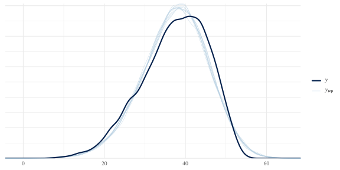
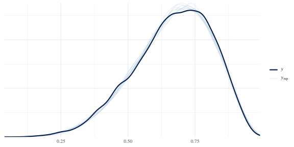
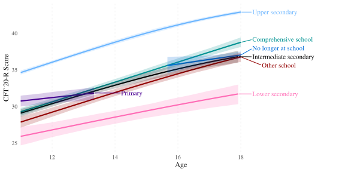

Model selection
2025-03-13
The purpose of this document is to present an abridged version of our model selection process.
knitr::opts_chunk$set(
message = FALSE,
warning = TRUE,
include = TRUE,
error = TRUE,
fig.width = 8,
fig.height = 4
)
library(tidyverse)
library(haven)
library(ggrepel)
library(brms)
library(tidybayes)
library(marginaleffects)
library(bayesplot)
library(rstan)
# depending on the platform on which you want to run the brm you might need this or not. We ran the models on a Linux-operated server, cmdstanr version 0.5.3
options(mc.cores = 4,
brms.backend = "cmdstanr")
options(scipen = 999,
digits = 4)
# windowsFonts(Times = windowsFont("Times New Roman"))
theme_set(theme_minimal(base_size = 12, base_family = "Times"))
# get data
load("data/preprocessed/de_census/census.Rda")
load("../unshareable_data/preprocessed/tl.Rda")
# get function that calculates norms and plots them
source("age_norm_comparisons.R")1 Model comparisons
1.1 Normal likelihood
1.1.1 No interactions
We start with a main effect only model with age as a spline for regularised continuous modelling, and sex as a fixed instead of random effect because of the small number of categories (2).
brm_nor <-
brm(bf(
cft ~ (1 | mig) + (1 | educ) + male + s(age),
sigma ~ (1 | mig) + (1 | educ) + male + s(age)
),
family = gaussian(),
chains = 4,
seed = 810,
file = "../unshareable_data/brms/cft/brm_nor",
data = tl) %>%
add_criterion("loo")
brm_nor## Warning: There were 5 divergent transitions after warmup. Increasing
## adapt_delta above 0.8 may help. See
## http://mc-stan.org/misc/warnings.html#divergent-transitions-after-warmup## Family: gaussian
## Links: mu = identity; sigma = log
## Formula: cft ~ (1 | mig) + (1 | educ) + male + s(age)
## sigma ~ (1 | mig) + (1 | educ) + male + s(age)
## Data: tl (Number of observations: 9980)
## Draws: 4 chains, each with iter = 2000; warmup = 1000; thin = 1;
## total post-warmup draws = 4000
##
## Smoothing Spline Hyperparameters:
## Estimate Est.Error l-95% CI u-95% CI Rhat Bulk_ESS Tail_ESS
## sds(sage_1) 21.10 5.45 12.88 34.08 1.00 1453 1891
## sds(sigma_sage_1) 0.13 0.14 0.00 0.50 1.00 1327 1977
##
## Multilevel Hyperparameters:
## ~educ (Number of levels: 15)
## Estimate Est.Error l-95% CI u-95% CI Rhat Bulk_ESS Tail_ESS
## sd(Intercept) 4.61 1.00 3.15 7.02 1.00 1264 1915
## sd(sigma_Intercept) 0.10 0.03 0.06 0.17 1.00 1570 2496
##
## ~mig (Number of levels: 6)
## Estimate Est.Error l-95% CI u-95% CI Rhat Bulk_ESS Tail_ESS
## sd(Intercept) 3.02 1.30 1.53 6.52 1.00 1489 2507
## sd(sigma_Intercept) 0.11 0.06 0.05 0.25 1.00 1531 2143
##
## Regression Coefficients:
## Estimate Est.Error l-95% CI u-95% CI Rhat Bulk_ESS Tail_ESS
## Intercept 33.83 1.77 30.43 37.45 1.00 1130 1606
## sigma_Intercept 1.99 0.06 1.87 2.10 1.00 1769 2020
## maleTRUE 1.47 0.13 1.21 1.73 1.00 7599 2963
## sigma_maleTRUE 0.01 0.01 -0.02 0.04 1.00 8263 2851
## sage_1 37.63 12.20 12.83 61.66 1.00 3654 3295
## sigma_sage_1 -0.02 0.31 -0.60 0.71 1.00 3208 2013
##
## Draws were sampled using sample(hmc). For each parameter, Bulk_ESS
## and Tail_ESS are effective sample size measures, and Rhat is the potential
## scale reduction factor on split chains (at convergence, Rhat = 1).pp_check(brm_nor)
bayes_R2(brm_nor)## Estimate Est.Error Q2.5 Q97.5
## R2 0.3101 0.006784 0.2963 0.3233Doesn’t look too bad but the fit isn’t great and 5 divergent transitions in such a simple model.
1.1.2 Spline by educ for the mean
Now we fit a spline for each education category separately to allow for different development trajectories.
1.1.2.1 educ as random main effect
brm_nor_s_by_educ_main_random_educ <-
brm(bf(
cft ~ (1 | mig) + male + (1 | educ) + s(age, by = educ),
sigma ~ (1 | mig) + (1 | educ) + male + s(age)),
family = gaussian(),
chains = 4,
seed = 810,
file = "../unshareable_data/brms/cft/brm_nor_s_by_educ_main_random_educ",
data = tl) %>%
add_criterion("loo")
brm_nor_s_by_educ_main_random_educ## Warning: There were 179 divergent transitions after warmup. Increasing
## adapt_delta above 0.8 may help. See
## http://mc-stan.org/misc/warnings.html#divergent-transitions-after-warmup## Family: gaussian
## Links: mu = identity; sigma = log
## Formula: cft ~ (1 | mig) + male + (1 | educ) + s(age, by = educ)
## sigma ~ (1 | mig) + (1 | educ) + male + s(age)
## Data: tl (Number of observations: 9980)
## Draws: 4 chains, each with iter = 2000; warmup = 1000; thin = 1;
## total post-warmup draws = 4000
##
## Smoothing Spline Hyperparameters:
## Estimate Est.Error l-95% CI
## sds(sageeducISCED3b:Uppersecondaryvocational_1) 8.62 3.86 3.43
## sds(sageeducISCED1:Primary_1) 9.07 6.81 0.47
## sds(sageeducISCED2:Lowersecondary_1) 7.90 6.10 0.36
## sds(sageeducISCED3a:Uppersecondarygeneral_1) 10.35 7.38 0.84
## sds(sageeducISCED4:PostMsecondary_1) 7.69 4.15 1.97
## sds(sageeducISCED5a:Tertiarye.g.college_1) 7.85 4.36 2.43
## sds(sageeducISCED5b:Tertiarye.g.coMopprogram_1) 8.30 3.80 3.28
## sds(sageeducISCED6:PhD_1) 6.89 5.73 0.25
## sds(sageeducST1:Primary_1) 10.11 11.63 0.26
## sds(sageeducST2:Lowersecondary_1) 8.60 8.59 0.23
## sds(sageeducST3:Intermediatesecondary_1) 11.17 11.08 0.32
## sds(sageeducST4:Uppersecondary_1) 12.15 9.48 0.49
## sds(sageeducST5:Comprehensiveschool_1) 10.54 10.46 0.36
## sds(sageeducST6:Otherschool_1) 9.82 9.54 0.36
## sds(sageeducST7:Nolongeratschool_1) 11.00 11.30 0.30
## sds(sigma_sage_1) 0.14 0.14 0.01
## u-95% CI Rhat Bulk_ESS Tail_ESS
## sds(sageeducISCED3b:Uppersecondaryvocational_1) 18.51 1.00 2319 2561
## sds(sageeducISCED1:Primary_1) 26.05 1.00 1962 1767
## sds(sageeducISCED2:Lowersecondary_1) 23.12 1.00 1286 1664
## sds(sageeducISCED3a:Uppersecondarygeneral_1) 28.13 1.00 1459 1805
## sds(sageeducISCED4:PostMsecondary_1) 17.75 1.00 1774 1555
## sds(sageeducISCED5a:Tertiarye.g.college_1) 19.34 1.00 1795 2296
## sds(sageeducISCED5b:Tertiarye.g.coMopprogram_1) 17.48 1.00 2772 2572
## sds(sageeducISCED6:PhD_1) 21.69 1.00 1789 2110
## sds(sageeducST1:Primary_1) 40.41 1.00 3987 2034
## sds(sageeducST2:Lowersecondary_1) 31.09 1.00 2992 2247
## sds(sageeducST3:Intermediatesecondary_1) 40.94 1.00 1973 1947
## sds(sageeducST4:Uppersecondary_1) 36.08 1.00 1755 2058
## sds(sageeducST5:Comprehensiveschool_1) 37.81 1.00 1922 2176
## sds(sageeducST6:Otherschool_1) 34.09 1.00 2321 2416
## sds(sageeducST7:Nolongeratschool_1) 40.99 1.00 4474 2545
## sds(sigma_sage_1) 0.52 1.00 1185 2051
##
## Multilevel Hyperparameters:
## ~educ (Number of levels: 15)
## Estimate Est.Error l-95% CI u-95% CI Rhat Bulk_ESS Tail_ESS
## sd(Intercept) 11.70 2.98 6.84 18.43 1.00 1404 1629
## sd(sigma_Intercept) 0.10 0.03 0.06 0.16 1.00 1320 2025
##
## ~mig (Number of levels: 6)
## Estimate Est.Error l-95% CI u-95% CI Rhat Bulk_ESS Tail_ESS
## sd(Intercept) 2.91 1.23 1.46 6.03 1.00 1589 2356
## sd(sigma_Intercept) 0.10 0.06 0.05 0.25 1.00 1562 1874
##
## Regression Coefficients:
## Estimate Est.Error l-95% CI
## Intercept 42.00 3.51 35.43
## sigma_Intercept 1.99 0.06 1.87
## maleTRUE 1.47 0.13 1.22
## sigma_maleTRUE 0.01 0.01 -0.02
## sage:educISCED3b:Uppersecondaryvocational_1 -29.66 19.40 -72.07
## sage:educISCED1:Primary_1 1.26 29.51 -60.61
## sage:educISCED2:Lowersecondary_1 -28.17 24.93 -89.00
## sage:educISCED3a:Uppersecondarygeneral_1 -17.31 26.85 -79.26
## sage:educISCED4:PostMsecondary_1 -19.39 22.56 -70.41
## sage:educISCED5a:Tertiarye.g.college_1 -24.40 18.04 -64.50
## sage:educISCED5b:Tertiarye.g.coMopprogram_1 -19.46 20.47 -62.29
## sage:educISCED6:PhD_1 -21.60 25.79 -72.19
## sage:educST1:Primary_1 76.15 64.62 -41.26
## sage:educST2:Lowersecondary_1 101.31 44.04 12.02
## sage:educST3:Intermediatesecondary_1 101.35 50.24 -13.94
## sage:educST4:Uppersecondary_1 90.11 45.04 -24.50
## sage:educST5:Comprehensiveschool_1 114.52 44.26 7.68
## sage:educST6:Otherschool_1 108.78 44.62 2.18
## sage:educST7:Nolongeratschool_1 106.85 67.22 -21.32
## sigma_sage_1 0.02 0.33 -0.63
## u-95% CI Rhat Bulk_ESS Tail_ESS
## Intercept 49.33 1.00 925 1622
## sigma_Intercept 2.10 1.00 1754 2117
## maleTRUE 1.73 1.00 7496 2665
## sigma_maleTRUE 0.04 1.00 7591 2862
## sage:educISCED3b:Uppersecondaryvocational_1 7.39 1.00 2661 1985
## sage:educISCED1:Primary_1 55.07 1.00 2074 1376
## sage:educISCED2:Lowersecondary_1 8.47 1.00 2545 2214
## sage:educISCED3a:Uppersecondarygeneral_1 33.63 1.00 3211 2167
## sage:educISCED4:PostMsecondary_1 20.10 1.00 2360 1993
## sage:educISCED5a:Tertiarye.g.college_1 11.12 1.00 2890 2301
## sage:educISCED5b:Tertiarye.g.coMopprogram_1 20.86 1.00 2937 2443
## sage:educISCED6:PhD_1 37.26 1.00 2352 1487
## sage:educST1:Primary_1 211.47 1.00 2656 1788
## sage:educST2:Lowersecondary_1 184.53 1.00 2557 1623
## sage:educST3:Intermediatesecondary_1 187.11 1.00 1611 1552
## sage:educST4:Uppersecondary_1 164.27 1.00 1639 1341
## sage:educST5:Comprehensiveschool_1 187.57 1.00 1568 1469
## sage:educST6:Otherschool_1 177.57 1.00 2404 1905
## sage:educST7:Nolongeratschool_1 247.24 1.00 2666 2310
## sigma_sage_1 0.76 1.00 2577 1801
##
## Draws were sampled using sample(hmc). For each parameter, Bulk_ESS
## and Tail_ESS are effective sample size measures, and Rhat is the potential
## scale reduction factor on split chains (at convergence, Rhat = 1).pp_check(brm_nor_s_by_educ_main_random_educ)
loo_compare(brm_nor, brm_nor_s_by_educ_main_random_educ)## elpd_diff se_diff
## brm_nor_s_by_educ_main_random_educ 0.0 0.0
## brm_nor -0.3 7.0179 divergent transitions and negligible gain in fit compared to the simpler model.
1.1.2.2 educ as fixed main effect
brm_nor_age_by_educ_main_fixed_educ <-
brm(bf(
cft ~ (1 | mig) + male + educ + s(age, by = educ),
sigma ~ (1 | mig) + (1 | educ) + male + s(age)
),
family = gaussian(),
chains = 4,
seed = 810,
file = "../unshareable_data/brms/cft/brm_nor_s_by_educ_main_fixed_educ",
data = tl) %>%
add_criterion("loo")
brm_nor_age_by_educ_main_fixed_educ## Warning: There were 138 divergent transitions after warmup. Increasing
## adapt_delta above 0.8 may help. See
## http://mc-stan.org/misc/warnings.html#divergent-transitions-after-warmup## Family: gaussian
## Links: mu = identity; sigma = log
## Formula: cft ~ (1 | mig) + male + educ + s(age, by = educ)
## sigma ~ (1 | mig) + (1 | educ) + male + s(age)
## Data: tl (Number of observations: 9980)
## Draws: 4 chains, each with iter = 2000; warmup = 1000; thin = 1;
## total post-warmup draws = 4000
##
## Smoothing Spline Hyperparameters:
## Estimate Est.Error l-95% CI
## sds(sageeducISCED3b:Uppersecondaryvocational_1) 8.48 3.88 3.39
## sds(sageeducISCED1:Primary_1) 9.20 6.50 0.58
## sds(sageeducISCED2:Lowersecondary_1) 7.85 5.69 0.38
## sds(sageeducISCED3a:Uppersecondarygeneral_1) 10.59 7.53 0.88
## sds(sageeducISCED4:PostMsecondary_1) 7.79 4.51 1.95
## sds(sageeducISCED5a:Tertiarye.g.college_1) 7.80 4.29 2.42
## sds(sageeducISCED5b:Tertiarye.g.coMopprogram_1) 8.58 4.15 3.41
## sds(sageeducISCED6:PhD_1) 6.77 5.70 0.23
## sds(sageeducST1:Primary_1) 9.96 11.49 0.28
## sds(sageeducST2:Lowersecondary_1) 9.65 10.13 0.33
## sds(sageeducST3:Intermediatesecondary_1) 10.88 11.95 0.32
## sds(sageeducST4:Uppersecondary_1) 10.94 10.59 0.33
## sds(sageeducST5:Comprehensiveschool_1) 10.48 10.95 0.36
## sds(sageeducST6:Otherschool_1) 9.49 10.28 0.33
## sds(sageeducST7:Nolongeratschool_1) 9.73 10.67 0.32
## sds(sigma_sage_1) 0.14 0.14 0.01
## u-95% CI Rhat Bulk_ESS Tail_ESS
## sds(sageeducISCED3b:Uppersecondaryvocational_1) 18.19 1.00 2211 2733
## sds(sageeducISCED1:Primary_1) 25.17 1.00 1812 1532
## sds(sageeducISCED2:Lowersecondary_1) 21.66 1.00 1406 1749
## sds(sageeducISCED3a:Uppersecondarygeneral_1) 29.87 1.00 1453 1663
## sds(sageeducISCED4:PostMsecondary_1) 19.09 1.00 2016 2270
## sds(sageeducISCED5a:Tertiarye.g.college_1) 19.02 1.00 1891 2422
## sds(sageeducISCED5b:Tertiarye.g.coMopprogram_1) 20.25 1.00 1934 837
## sds(sageeducISCED6:PhD_1) 21.67 1.00 2158 2040
## sds(sageeducST1:Primary_1) 41.44 1.00 4186 1549
## sds(sageeducST2:Lowersecondary_1) 35.27 1.00 2406 2328
## sds(sageeducST3:Intermediatesecondary_1) 45.53 1.00 1669 1053
## sds(sageeducST4:Uppersecondary_1) 41.61 1.00 824 470
## sds(sageeducST5:Comprehensiveschool_1) 41.49 1.00 1780 1262
## sds(sageeducST6:Otherschool_1) 37.16 1.00 1509 1050
## sds(sageeducST7:Nolongeratschool_1) 36.62 1.00 2963 2146
## sds(sigma_sage_1) 0.52 1.00 1432 1809
##
## Multilevel Hyperparameters:
## ~mig (Number of levels: 6)
## Estimate Est.Error l-95% CI u-95% CI Rhat Bulk_ESS Tail_ESS
## sd(Intercept) 2.97 1.33 1.44 6.34 1.00 1175 2007
## sd(sigma_Intercept) 0.10 0.05 0.04 0.24 1.00 1264 1943
##
## ~educ (Number of levels: 15)
## Estimate Est.Error l-95% CI u-95% CI Rhat Bulk_ESS Tail_ESS
## sd(sigma_Intercept) 0.10 0.02 0.06 0.16 1.00 1438 2238
##
## Regression Coefficients:
## Estimate Est.Error l-95% CI
## Intercept 32.98 1.36 30.20
## sigma_Intercept 1.99 0.05 1.87
## maleTRUE 1.48 0.14 1.21
## educISCED1:Primary -9.17 1.60 -12.58
## educISCED2:Lowersecondary -2.96 0.92 -4.59
## educISCED3a:Uppersecondarygeneral 5.23 0.85 3.49
## educISCED4:PostMsecondary 4.39 0.85 2.66
## educISCED5a:Tertiarye.g.college 6.41 0.86 4.62
## educISCED5b:Tertiarye.g.coMopprogram 2.12 0.93 0.16
## educISCED6:PhD 9.96 2.23 5.08
## educST1:Primary 92.06 50.25 -8.73
## educST2:Lowersecondary 19.67 11.59 -3.13
## educST3:Intermediatesecondary 21.92 12.02 -6.34
## educST4:Uppersecondary 24.52 10.14 -1.16
## educST5:Comprehensiveschool 29.46 10.64 12.41
## educST6:Otherschool 25.67 10.19 7.14
## educST7:Nolongeratschool 41.56 18.16 6.45
## sigma_maleTRUE 0.01 0.01 -0.02
## sage:educISCED3b:Uppersecondaryvocational_1 -28.59 20.01 -71.83
## sage:educISCED1:Primary_1 3.97 27.88 -57.57
## sage:educISCED2:Lowersecondary_1 -27.48 24.58 -88.46
## sage:educISCED3a:Uppersecondarygeneral_1 -18.20 30.26 -85.05
## sage:educISCED4:PostMsecondary_1 -18.50 21.92 -67.02
## sage:educISCED5a:Tertiarye.g.college_1 -23.71 18.52 -63.00
## sage:educISCED5b:Tertiarye.g.coMopprogram_1 -18.50 19.87 -61.59
## sage:educISCED6:PhD_1 -24.20 24.95 -78.61
## sage:educST1:Primary_1 390.20 206.21 -24.62
## sage:educST2:Lowersecondary_1 119.77 59.80 2.69
## sage:educST3:Intermediatesecondary_1 114.85 58.09 -22.71
## sage:educST4:Uppersecondary_1 105.39 50.86 -11.60
## sage:educST5:Comprehensiveschool_1 138.25 51.54 32.46
## sage:educST6:Otherschool_1 132.33 53.80 37.55
## sage:educST7:Nolongeratschool_1 220.19 99.53 31.89
## sigma_sage_1 0.02 0.31 -0.53
## u-95% CI Rhat Bulk_ESS Tail_ESS
## Intercept 35.59 1.00 1464 2303
## sigma_Intercept 2.09 1.00 1498 1863
## maleTRUE 1.74 1.00 5047 2541
## educISCED1:Primary -6.21 1.00 2248 2633
## educISCED2:Lowersecondary -0.95 1.00 1484 1794
## educISCED3a:Uppersecondarygeneral 6.85 1.00 1562 1631
## educISCED4:PostMsecondary 6.06 1.00 1491 1975
## educISCED5a:Tertiarye.g.college 8.05 1.00 1515 1648
## educISCED5b:Tertiarye.g.coMopprogram 3.93 1.00 1572 758
## educISCED6:PhD 14.30 1.00 1911 2139
## educST1:Primary 190.30 1.00 3094 2670
## educST2:Lowersecondary 42.65 1.00 2274 1841
## educST3:Intermediatesecondary 41.29 1.00 1196 715
## educST4:Uppersecondary 38.77 1.00 802 407
## educST5:Comprehensiveschool 54.30 1.00 1130 748
## educST6:Otherschool 46.27 1.00 1269 695
## educST7:Nolongeratschool 75.78 1.00 2665 1871
## sigma_maleTRUE 0.04 1.00 9021 2646
## sage:educISCED3b:Uppersecondaryvocational_1 8.24 1.00 1565 1721
## sage:educISCED1:Primary_1 62.46 1.00 2399 1924
## sage:educISCED2:Lowersecondary_1 10.01 1.00 1631 1761
## sage:educISCED3a:Uppersecondarygeneral_1 35.13 1.00 1461 616
## sage:educISCED4:PostMsecondary_1 23.07 1.00 1678 1728
## sage:educISCED5a:Tertiarye.g.college_1 14.59 1.00 1823 1765
## sage:educISCED5b:Tertiarye.g.coMopprogram_1 19.64 1.00 2517 2051
## sage:educISCED6:PhD_1 27.54 1.00 1782 1842
## sage:educST1:Primary_1 796.79 1.00 2920 2624
## sage:educST2:Lowersecondary_1 235.31 1.00 1844 1324
## sage:educST3:Intermediatesecondary_1 218.55 1.00 1341 865
## sage:educST4:Uppersecondary_1 194.08 1.00 903 528
## sage:educST5:Comprehensiveschool_1 250.23 1.00 1170 628
## sage:educST6:Otherschool_1 244.79 1.00 1241 738
## sage:educST7:Nolongeratschool_1 408.55 1.00 2716 2222
## sigma_sage_1 0.72 1.00 2213 1616
##
## Draws were sampled using sample(hmc). For each parameter, Bulk_ESS
## and Tail_ESS are effective sample size measures, and Rhat is the potential
## scale reduction factor on split chains (at convergence, Rhat = 1).pp_check(brm_nor_age_by_educ_main_fixed_educ)
138 divergent transitions when educ is a fixed effect instead of random.
1.1.2.3 No educ main effect
brm_nor_s_by_educ <-
brm(bf(
cft ~ (1 | mig) + male + s(age, by = educ),
sigma ~ (1 | mig) + (1 | educ) + male + s(age)),
family = gaussian(),
chains = 4,
seed = 810,
file = "../unshareable_data/brms/cft/brm_nor_s_by_educ",
data = tl) %>%
add_criterion("loo")
brm_nor_s_by_educ## Warning: There were 82 divergent transitions after warmup. Increasing
## adapt_delta above 0.8 may help. See
## http://mc-stan.org/misc/warnings.html#divergent-transitions-after-warmup## Family: gaussian
## Links: mu = identity; sigma = log
## Formula: cft ~ (1 | mig) + male + s(age, by = educ)
## sigma ~ (1 | mig) + (1 | educ) + male + s(age)
## Data: tl (Number of observations: 9980)
## Draws: 4 chains, each with iter = 2000; warmup = 1000; thin = 1;
## total post-warmup draws = 4000
##
## Smoothing Spline Hyperparameters:
## Estimate Est.Error l-95% CI
## sds(sageeducISCED3b:Uppersecondaryvocational_1) 26.90 8.90 13.62
## sds(sageeducISCED1:Primary_1) 94.05 31.07 50.62
## sds(sageeducISCED2:Lowersecondary_1) 69.95 25.18 34.59
## sds(sageeducISCED3a:Uppersecondarygeneral_1) 17.53 9.63 2.71
## sds(sageeducISCED4:PostMsecondary_1) 8.41 4.58 2.32
## sds(sageeducISCED5a:Tertiarye.g.college_1) 19.34 6.83 9.32
## sds(sageeducISCED5b:Tertiarye.g.coMopprogram_1) 12.61 5.68 4.62
## sds(sageeducISCED6:PhD_1) 14.68 6.66 6.49
## sds(sageeducST1:Primary_1) 10.33 10.92 0.33
## sds(sageeducST2:Lowersecondary_1) 12.21 10.70 0.55
## sds(sageeducST3:Intermediatesecondary_1) 23.84 13.99 9.00
## sds(sageeducST4:Uppersecondary_1) 26.36 10.47 13.01
## sds(sageeducST5:Comprehensiveschool_1) 28.53 15.06 11.95
## sds(sageeducST6:Otherschool_1) 23.95 13.04 9.92
## sds(sageeducST7:Nolongeratschool_1) 14.41 14.42 0.42
## sds(sigma_sage_1) 0.13 0.13 0.00
## u-95% CI Rhat Bulk_ESS Tail_ESS
## sds(sageeducISCED3b:Uppersecondaryvocational_1) 48.74 1.00 1297 1796
## sds(sageeducISCED1:Primary_1) 168.77 1.00 1866 2534
## sds(sageeducISCED2:Lowersecondary_1) 130.80 1.00 1090 1782
## sds(sageeducISCED3a:Uppersecondarygeneral_1) 40.15 1.00 994 976
## sds(sageeducISCED4:PostMsecondary_1) 19.88 1.00 1593 2191
## sds(sageeducISCED5a:Tertiarye.g.college_1) 35.95 1.00 894 2030
## sds(sageeducISCED5b:Tertiarye.g.coMopprogram_1) 26.72 1.00 1394 1637
## sds(sageeducISCED6:PhD_1) 31.59 1.00 3044 3018
## sds(sageeducST1:Primary_1) 41.00 1.00 2968 2290
## sds(sageeducST2:Lowersecondary_1) 40.43 1.00 2318 1975
## sds(sageeducST3:Intermediatesecondary_1) 61.59 1.00 2964 2036
## sds(sageeducST4:Uppersecondary_1) 53.66 1.00 3673 2790
## sds(sageeducST5:Comprehensiveschool_1) 69.68 1.00 2616 2394
## sds(sageeducST6:Otherschool_1) 57.46 1.00 3226 2293
## sds(sageeducST7:Nolongeratschool_1) 51.47 1.00 2596 2260
## sds(sigma_sage_1) 0.49 1.00 1421 2258
##
## Multilevel Hyperparameters:
## ~mig (Number of levels: 6)
## Estimate Est.Error l-95% CI u-95% CI Rhat Bulk_ESS Tail_ESS
## sd(Intercept) 2.94 1.25 1.46 6.10 1.00 1777 2386
## sd(sigma_Intercept) 0.10 0.06 0.04 0.24 1.00 1601 1968
##
## ~educ (Number of levels: 15)
## Estimate Est.Error l-95% CI u-95% CI Rhat Bulk_ESS Tail_ESS
## sd(sigma_Intercept) 0.10 0.02 0.06 0.15 1.00 1584 2360
##
## Regression Coefficients:
## Estimate Est.Error l-95% CI
## Intercept 36.92 1.40 34.03
## sigma_Intercept 1.98 0.06 1.87
## maleTRUE 1.46 0.14 1.19
## sigma_maleTRUE 0.01 0.01 -0.02
## sage:educISCED3b:Uppersecondaryvocational_1 -149.78 40.41 -235.21
## sage:educISCED1:Primary_1 -392.34 121.74 -657.88
## sage:educISCED2:Lowersecondary_1 -378.04 101.15 -593.27
## sage:educISCED3a:Uppersecondarygeneral_1 11.55 36.93 -52.84
## sage:educISCED4:PostMsecondary_1 -8.54 21.52 -50.08
## sage:educISCED5a:Tertiarye.g.college_1 31.94 29.85 -19.59
## sage:educISCED5b:Tertiarye.g.coMopprogram_1 -57.12 26.91 -115.28
## sage:educISCED6:PhD_1 24.38 32.87 -37.01
## sage:educST1:Primary_1 36.44 35.48 -29.07
## sage:educST2:Lowersecondary_1 54.63 40.58 -22.72
## sage:educST3:Intermediatesecondary_1 55.76 67.54 -65.33
## sage:educST4:Uppersecondary_1 36.43 66.65 -99.02
## sage:educST5:Comprehensiveschool_1 29.48 79.32 -148.08
## sage:educST6:Otherschool_1 46.69 65.41 -88.88
## sage:educST7:Nolongeratschool_1 24.93 51.32 -60.21
## sigma_sage_1 -0.01 0.33 -0.61
## u-95% CI Rhat Bulk_ESS Tail_ESS
## Intercept 39.67 1.00 1225 1642
## sigma_Intercept 2.09 1.00 1452 1956
## maleTRUE 1.74 1.00 8270 2851
## sigma_maleTRUE 0.04 1.00 8309 2785
## sage:educISCED3b:Uppersecondaryvocational_1 -76.50 1.00 1272 1674
## sage:educISCED1:Primary_1 -163.76 1.00 2422 2357
## sage:educISCED2:Lowersecondary_1 -199.59 1.00 1150 1684
## sage:educISCED3a:Uppersecondarygeneral_1 94.30 1.00 1696 1912
## sage:educISCED4:PostMsecondary_1 38.67 1.00 1464 1420
## sage:educISCED5a:Tertiarye.g.college_1 97.61 1.00 1416 1855
## sage:educISCED5b:Tertiarye.g.coMopprogram_1 -11.57 1.00 1260 2270
## sage:educISCED6:PhD_1 95.90 1.00 3039 2594
## sage:educST1:Primary_1 121.68 1.00 2031 1193
## sage:educST2:Lowersecondary_1 145.75 1.00 2220 1673
## sage:educST3:Intermediatesecondary_1 208.99 1.00 2469 1645
## sage:educST4:Uppersecondary_1 177.64 1.00 2826 2139
## sage:educST5:Comprehensiveschool_1 175.96 1.00 2136 1966
## sage:educST6:Otherschool_1 174.08 1.00 2766 2258
## sage:educST7:Nolongeratschool_1 154.41 1.00 2102 1419
## sigma_sage_1 0.76 1.00 2538 2085
##
## Draws were sampled using sample(hmc). For each parameter, Bulk_ESS
## and Tail_ESS are effective sample size measures, and Rhat is the potential
## scale reduction factor on split chains (at convergence, Rhat = 1).pp_check(brm_nor_s_by_educ)
bayes_R2(brm_nor_s_by_educ)## Estimate Est.Error Q2.5 Q97.5
## R2 0.3123 0.006752 0.2989 0.326loo_compare(brm_nor, brm_nor_s_by_educ, brm_nor_s_by_educ_main_random_educ, brm_nor_age_by_educ_main_fixed_educ)## elpd_diff se_diff
## brm_nor_age_by_educ_main_fixed_educ 0.0 0.0
## brm_nor_s_by_educ_main_random_educ -0.7 2.1
## brm_nor -1.0 7.4
## brm_nor_s_by_educ -10.3 6.3Somewhat worse prediction accuracy, but similar fit and 82 divergent transitions.
Here we don’t include a main effect for educ because it does not contribute any improvement in fit while leading to two problems: 1. more divergent transitions and 2. irregualrities in the norms, see comparison:
main_educ_vs_not <- age_norm_comparisons(
brm_nor, brm_nor_s_by_educ, brm_nor_s_by_educ_main_random_educ,
palette = c(
"#BC3C29FF",
# "#0072B5FF",
"#20854EFF",
# "#7876B1FF",
"#6F99ADFF",
# "#E18727FF",
# "#FFDC91FF",
"#EE4C97FF"
),
output_file = "data/results/main_educ_vs_not.rds"
)
main_educ_vs_not## $means_ns_sds_and_ses
## # A tibble: 220 × 7
## age source mean seOfmean sd seOfsd n
## <dbl> <fct> <dbl> <dbl> <dbl> <dbl> <int>
## 1 11 RPP_brm_nor 30.9 0.316 7.83 0.211 NA
## 2 11 RPP_brm_nor_s_by_educ 31.2 0.344 7.80 0.237 NA
## 3 11 RPP_brm_nor_s_by_educ_main_random_ed… 31.1 0.334 7.87 0.239 NA
## 4 11 Raw 32.2 0.244 7.36 NA 909
## 5 12 RPP_brm_nor 32.2 0.284 7.87 0.216 NA
## 6 12 RPP_brm_nor_s_by_educ 32.3 0.295 7.87 0.225 NA
## 7 12 RPP_brm_nor_s_by_educ_main_random_ed… 32.2 0.302 7.90 0.226 NA
## 8 12 Raw 34.3 0.697 7.38 NA 112
## 9 13 RPP_brm_nor 33.7 0.283 7.89 0.216 NA
## 10 13 RPP_brm_nor_s_by_educ 33.6 0.295 7.94 0.227 NA
## # ℹ 210 more rows
##
## $overall_estimates
## # A tibble: 3 × 5
## Mean SE_of_Mean SD SE_of_SD Model
## <dbl> <dbl> <dbl> <dbl> <chr>
## 1 35.6 0.101 8.61 0.0822 RPP_brm_nor
## 2 35.7 0.115 8.62 0.100 RPP_brm_nor_s_by_educ
## 3 35.6 0.105 8.59 0.0879 RPP_brm_nor_s_by_educ_main_random_educ
##
## $means_plot
##
## $SDs_plot## Warning: Removed 55 rows containing missing values or values outside the scale range
## (`geom_segment()`).
##
## $SEs_plot
So it seems the term s(age, by = educ) is required
without additionally including a main effect of educ to get sensible
estimates for ages 19-22. This is probably due to the change in meaning
of the education variable at age 19 (school type to ISCED), which causes
some difficulties for the model.
1.1.3 More interactions
We incorporate more interactions into the mean prediction for theoretical reasons (it is e.g., reasonable to expect educational background to interact with migration background).
brm_nor_ints <-
brm(bf(
cft ~ (1 | mig) + male + (1 | mig:male) + (1 | mig:educ) + (1 | male:educ) + s(age, by = educ),
sigma ~ (1 | mig) + (1 | educ) + male + s(age)
),
chains = 4,
seed = 810,
file = "../unshareable_data/brms/cft/brm_nor_ints",
data = tl) %>%
add_criterion("loo")
brm_nor_ints## Warning: There were 63 divergent transitions after warmup. Increasing
## adapt_delta above 0.8 may help. See
## http://mc-stan.org/misc/warnings.html#divergent-transitions-after-warmup## Family: gaussian
## Links: mu = identity; sigma = log
## Formula: cft ~ (1 | mig) + male + (1 | mig:male) + (1 | mig:educ) + (1 | male:educ) + s(age, by = educ)
## sigma ~ (1 | mig) + (1 | educ) + male + s(age)
## Data: tl (Number of observations: 9980)
## Draws: 4 chains, each with iter = 2000; warmup = 1000; thin = 1;
## total post-warmup draws = 4000
##
## Smoothing Spline Hyperparameters:
## Estimate Est.Error l-95% CI
## sds(sageeducISCED3b:Uppersecondaryvocational_1) 8.55 4.11 3.29
## sds(sageeducISCED1:Primary_1) 15.86 22.83 0.36
## sds(sageeducISCED2:Lowersecondary_1) 10.85 6.81 1.32
## sds(sageeducISCED3a:Uppersecondarygeneral_1) 10.19 7.45 0.99
## sds(sageeducISCED4:PostMsecondary_1) 7.46 4.13 1.82
## sds(sageeducISCED5a:Tertiarye.g.college_1) 8.56 4.62 2.54
## sds(sageeducISCED5b:Tertiarye.g.coMopprogram_1) 8.62 3.94 3.53
## sds(sageeducISCED6:PhD_1) 9.67 6.93 0.57
## sds(sageeducST1:Primary_1) 10.78 12.33 0.31
## sds(sageeducST2:Lowersecondary_1) 11.66 10.30 0.40
## sds(sageeducST3:Intermediatesecondary_1) 22.90 14.47 5.63
## sds(sageeducST4:Uppersecondary_1) 26.56 11.63 11.50
## sds(sageeducST5:Comprehensiveschool_1) 27.89 16.02 10.12
## sds(sageeducST6:Otherschool_1) 22.15 12.10 7.21
## sds(sageeducST7:Nolongeratschool_1) 14.44 14.92 0.41
## sds(sigma_sage_1) 0.14 0.14 0.00
## u-95% CI Rhat Bulk_ESS Tail_ESS
## sds(sageeducISCED3b:Uppersecondaryvocational_1) 18.38 1.00 2415 2610
## sds(sageeducISCED1:Primary_1) 87.39 1.01 365 334
## sds(sageeducISCED2:Lowersecondary_1) 27.72 1.00 1281 1220
## sds(sageeducISCED3a:Uppersecondarygeneral_1) 28.10 1.00 1674 1738
## sds(sageeducISCED4:PostMsecondary_1) 17.26 1.00 2045 2154
## sds(sageeducISCED5a:Tertiarye.g.college_1) 19.94 1.00 1739 2414
## sds(sageeducISCED5b:Tertiarye.g.coMopprogram_1) 18.21 1.00 2494 2749
## sds(sageeducISCED6:PhD_1) 27.10 1.00 1101 1365
## sds(sageeducST1:Primary_1) 43.48 1.00 2371 1534
## sds(sageeducST2:Lowersecondary_1) 37.11 1.00 2066 1771
## sds(sageeducST3:Intermediatesecondary_1) 59.92 1.00 1553 820
## sds(sageeducST4:Uppersecondary_1) 56.79 1.00 2378 2592
## sds(sageeducST5:Comprehensiveschool_1) 71.72 1.00 1550 1250
## sds(sageeducST6:Otherschool_1) 53.48 1.00 2126 1596
## sds(sageeducST7:Nolongeratschool_1) 55.04 1.00 2607 2303
## sds(sigma_sage_1) 0.51 1.00 1346 1893
##
## Multilevel Hyperparameters:
## ~male:educ (Number of levels: 30)
## Estimate Est.Error l-95% CI u-95% CI Rhat Bulk_ESS Tail_ESS
## sd(Intercept) 4.37 1.33 2.00 7.26 1.01 294 404
##
## ~mig (Number of levels: 6)
## Estimate Est.Error l-95% CI u-95% CI Rhat Bulk_ESS Tail_ESS
## sd(Intercept) 2.91 1.33 1.40 6.29 1.00 1362 1735
## sd(sigma_Intercept) 0.10 0.05 0.04 0.23 1.00 1345 1574
##
## ~mig:educ (Number of levels: 89)
## Estimate Est.Error l-95% CI u-95% CI Rhat Bulk_ESS Tail_ESS
## sd(Intercept) 0.75 0.22 0.35 1.22 1.00 1069 1934
##
## ~mig:male (Number of levels: 12)
## Estimate Est.Error l-95% CI u-95% CI Rhat Bulk_ESS Tail_ESS
## sd(Intercept) 0.24 0.27 0.01 0.86 1.00 2171 1890
##
## ~educ (Number of levels: 15)
## Estimate Est.Error l-95% CI u-95% CI Rhat Bulk_ESS Tail_ESS
## sd(sigma_Intercept) 0.10 0.03 0.06 0.16 1.00 1260 2365
##
## Regression Coefficients:
## Estimate Est.Error l-95% CI
## Intercept 36.59 2.01 32.78
## sigma_Intercept 1.98 0.06 1.87
## maleTRUE 0.97 1.73 -2.41
## sigma_maleTRUE 0.01 0.01 -0.02
## sage:educISCED3b:Uppersecondaryvocational_1 -30.96 19.96 -77.30
## sage:educISCED1:Primary_1 -51.33 101.10 -362.90
## sage:educISCED2:Lowersecondary_1 -41.33 34.09 -130.04
## sage:educISCED3a:Uppersecondarygeneral_1 -14.87 28.34 -73.71
## sage:educISCED4:PostMsecondary_1 -17.31 20.00 -60.38
## sage:educISCED5a:Tertiarye.g.college_1 -21.34 19.39 -60.59
## sage:educISCED5b:Tertiarye.g.coMopprogram_1 -21.43 20.15 -65.20
## sage:educISCED6:PhD_1 0.85 32.21 -50.80
## sage:educST1:Primary_1 31.07 42.57 -57.69
## sage:educST2:Lowersecondary_1 57.57 37.42 -21.38
## sage:educST3:Intermediatesecondary_1 55.43 67.83 -70.48
## sage:educST4:Uppersecondary_1 41.27 68.07 -97.58
## sage:educST5:Comprehensiveschool_1 31.55 91.05 -160.26
## sage:educST6:Otherschool_1 47.56 65.50 -87.44
## sage:educST7:Nolongeratschool_1 24.88 54.17 -86.27
## sigma_sage_1 0.01 0.32 -0.59
## u-95% CI Rhat Bulk_ESS Tail_ESS
## Intercept 40.62 1.01 844 1214
## sigma_Intercept 2.09 1.00 1174 1799
## maleTRUE 4.56 1.00 1101 1837
## sigma_maleTRUE 0.04 1.00 8303 3327
## sage:educISCED3b:Uppersecondaryvocational_1 3.66 1.00 2303 2157
## sage:educISCED1:Primary_1 24.15 1.01 364 384
## sage:educISCED2:Lowersecondary_1 7.64 1.00 1724 1725
## sage:educISCED3a:Uppersecondarygeneral_1 35.79 1.00 1428 1834
## sage:educISCED4:PostMsecondary_1 22.56 1.00 1928 2014
## sage:educISCED5a:Tertiarye.g.college_1 19.31 1.00 2003 2027
## sage:educISCED5b:Tertiarye.g.coMopprogram_1 17.37 1.00 2112 2372
## sage:educISCED6:PhD_1 78.93 1.01 1064 1925
## sage:educST1:Primary_1 108.55 1.00 1397 1136
## sage:educST2:Lowersecondary_1 133.16 1.00 2017 2108
## sage:educST3:Intermediatesecondary_1 190.40 1.00 1629 1803
## sage:educST4:Uppersecondary_1 180.59 1.00 2123 2170
## sage:educST5:Comprehensiveschool_1 182.03 1.00 1506 948
## sage:educST6:Otherschool_1 171.05 1.00 1450 1589
## sage:educST7:Nolongeratschool_1 146.03 1.00 1557 1438
## sigma_sage_1 0.80 1.00 2093 1720
##
## Draws were sampled using sample(hmc). For each parameter, Bulk_ESS
## and Tail_ESS are effective sample size measures, and Rhat is the potential
## scale reduction factor on split chains (at convergence, Rhat = 1).pp_check(brm_nor_ints)
bayes_R2(brm_nor_ints)## Estimate Est.Error Q2.5 Q97.5
## R2 0.3149 0.006614 0.3016 0.3278loo_compare(brm_nor, brm_nor_s_by_educ, brm_nor_ints)## elpd_diff se_diff
## brm_nor_ints 0.0 0.0
## brm_nor -4.3 9.6
## brm_nor_s_by_educ -13.6 8.5Somewhat better fit, but still not great + 63 divergent transitions.
How does the RPP look
rpp_nor_ints <- age_norm_comparisons(
brm_nor_ints,
palette = c(
"#BC3C29FF",
# "#0072B5FF",
"#20854EFF"
# "#7876B1FF",
# "#6F99ADFF",
# "#E18727FF",
# "#FFDC91FF",
# "#EE4C97FF"
),
output_file = "data/results/rpp_nor_ints.rds"
)
rpp_nor_ints## $means_ns_sds_and_ses
## # A tibble: 110 × 7
## age source mean seOfmean sd seOfsd n
## <dbl> <fct> <dbl> <dbl> <dbl> <dbl> <int>
## 1 11 RPP_brm_nor_ints 31.4 0.331 7.77 0.232 NA
## 2 11 Raw 32.2 0.244 7.36 NA 909
## 3 12 RPP_brm_nor_ints 32.2 0.299 7.88 0.227 NA
## 4 12 Raw 34.3 0.697 7.38 NA 112
## 5 13 RPP_brm_nor_ints 33.5 0.299 7.95 0.227 NA
## 6 13 Raw 36.4 0.674 7.97 NA 140
## 7 14 RPP_brm_nor_ints 34.5 0.301 8.05 0.233 NA
## 8 14 Raw 37.1 0.730 8.32 NA 130
## 9 15 RPP_brm_nor_ints 35.6 0.328 8.07 0.232 NA
## 10 15 Raw 36.4 0.861 8.21 NA 91
## # ℹ 100 more rows
##
## $overall_estimates
## # A tibble: 1 × 5
## Mean SE_of_Mean SD SE_of_SD Model
## <dbl> <dbl> <dbl> <dbl> <chr>
## 1 35.6 0.106 8.57 0.0927 RPP_brm_nor_ints
##
## $means_plot
##
## $SDs_plot## Warning: Removed 55 rows containing missing values or values outside the scale range
## (`geom_segment()`).
##
## $SEs_plot
Including the educ:male interaction reintroduces the malignant dip at age 19, so dropping that term in the next model.
1.1.4 No male:educ interaction
brm_nor_ints_no_educ_male <-
brm(bf(
cft ~ (1 | mig) + male + (1 | mig:male) + (1 | mig:educ) + s(age, by = educ),
sigma ~ (1 | mig) + (1 | educ) + male + s(age)
),
chains = 4,
seed = 810,
file = "../unshareable_data/brms/cft/brm_nor_ints_no_educ_male",
data = tl) %>%
add_criterion("loo")
brm_nor_ints_no_educ_male## Warning: There were 58 divergent transitions after warmup. Increasing
## adapt_delta above 0.8 may help. See
## http://mc-stan.org/misc/warnings.html#divergent-transitions-after-warmup## Family: gaussian
## Links: mu = identity; sigma = log
## Formula: cft ~ (1 | mig) + male + (1 | mig:male) + (1 | mig:educ) + s(age, by = educ)
## sigma ~ (1 | mig) + (1 | educ) + male + s(age)
## Data: tl (Number of observations: 9980)
## Draws: 4 chains, each with iter = 2000; warmup = 1000; thin = 1;
## total post-warmup draws = 4000
##
## Smoothing Spline Hyperparameters:
## Estimate Est.Error l-95% CI
## sds(sageeducISCED3b:Uppersecondaryvocational_1) 18.26 7.96 6.76
## sds(sageeducISCED1:Primary_1) 81.35 27.50 39.77
## sds(sageeducISCED2:Lowersecondary_1) 47.88 21.06 19.77
## sds(sageeducISCED3a:Uppersecondarygeneral_1) 13.87 8.77 1.04
## sds(sageeducISCED4:PostMsecondary_1) 8.37 4.51 2.28
## sds(sageeducISCED5a:Tertiarye.g.college_1) 18.29 7.24 7.12
## sds(sageeducISCED5b:Tertiarye.g.coMopprogram_1) 9.93 4.81 3.51
## sds(sageeducISCED6:PhD_1) 15.82 7.47 6.81
## sds(sageeducST1:Primary_1) 10.99 12.86 0.31
## sds(sageeducST2:Lowersecondary_1) 12.44 10.13 0.58
## sds(sageeducST3:Intermediatesecondary_1) 24.03 13.97 9.13
## sds(sageeducST4:Uppersecondary_1) 27.32 11.83 12.73
## sds(sageeducST5:Comprehensiveschool_1) 29.53 17.16 11.69
## sds(sageeducST6:Otherschool_1) 24.59 12.63 10.14
## sds(sageeducST7:Nolongeratschool_1) 15.52 16.93 0.45
## sds(sigma_sage_1) 0.13 0.14 0.00
## u-95% CI Rhat Bulk_ESS Tail_ESS
## sds(sageeducISCED3b:Uppersecondaryvocational_1) 37.20 1.00 741 1493
## sds(sageeducISCED1:Primary_1) 147.38 1.00 1375 2150
## sds(sageeducISCED2:Lowersecondary_1) 99.39 1.00 732 1575
## sds(sageeducISCED3a:Uppersecondarygeneral_1) 34.80 1.01 970 1035
## sds(sageeducISCED4:PostMsecondary_1) 19.33 1.00 1965 2451
## sds(sageeducISCED5a:Tertiarye.g.college_1) 35.70 1.00 955 840
## sds(sageeducISCED5b:Tertiarye.g.coMopprogram_1) 21.94 1.00 1486 2050
## sds(sageeducISCED6:PhD_1) 35.55 1.00 1951 1897
## sds(sageeducST1:Primary_1) 45.31 1.00 2803 2129
## sds(sageeducST2:Lowersecondary_1) 38.22 1.00 2056 1937
## sds(sageeducST3:Intermediatesecondary_1) 59.67 1.00 2357 2093
## sds(sageeducST4:Uppersecondary_1) 59.93 1.00 2288 2297
## sds(sageeducST5:Comprehensiveschool_1) 77.36 1.00 2129 1569
## sds(sageeducST6:Otherschool_1) 54.39 1.00 2688 1921
## sds(sageeducST7:Nolongeratschool_1) 61.64 1.00 1971 1756
## sds(sigma_sage_1) 0.51 1.00 1495 2083
##
## Multilevel Hyperparameters:
## ~mig (Number of levels: 6)
## Estimate Est.Error l-95% CI u-95% CI Rhat Bulk_ESS Tail_ESS
## sd(Intercept) 2.82 1.27 1.30 6.13 1.00 1536 2148
## sd(sigma_Intercept) 0.10 0.05 0.04 0.24 1.00 1240 1790
##
## ~mig:educ (Number of levels: 89)
## Estimate Est.Error l-95% CI u-95% CI Rhat Bulk_ESS Tail_ESS
## sd(Intercept) 1.07 0.34 0.51 1.81 1.00 583 1115
##
## ~mig:male (Number of levels: 12)
## Estimate Est.Error l-95% CI u-95% CI Rhat Bulk_ESS Tail_ESS
## sd(Intercept) 0.24 0.26 0.01 0.94 1.00 1461 1433
##
## ~educ (Number of levels: 15)
## Estimate Est.Error l-95% CI u-95% CI Rhat Bulk_ESS Tail_ESS
## sd(sigma_Intercept) 0.10 0.02 0.06 0.16 1.00 1301 2059
##
## Regression Coefficients:
## Estimate Est.Error l-95% CI
## Intercept 36.40 1.35 33.62
## sigma_Intercept 1.98 0.06 1.87
## maleTRUE 1.47 0.28 0.96
## sigma_maleTRUE 0.01 0.01 -0.02
## sage:educISCED3b:Uppersecondaryvocational_1 -97.34 40.10 -185.29
## sage:educISCED1:Primary_1 -349.22 112.70 -590.42
## sage:educISCED2:Lowersecondary_1 -254.79 100.10 -477.46
## sage:educISCED3a:Uppersecondarygeneral_1 3.47 31.43 -51.78
## sage:educISCED4:PostMsecondary_1 -9.42 20.69 -50.47
## sage:educISCED5a:Tertiarye.g.college_1 28.26 31.78 -28.76
## sage:educISCED5b:Tertiarye.g.coMopprogram_1 -39.31 23.64 -92.33
## sage:educISCED6:PhD_1 28.16 36.49 -41.45
## sage:educST1:Primary_1 30.05 36.75 -50.05
## sage:educST2:Lowersecondary_1 52.39 38.99 -26.52
## sage:educST3:Intermediatesecondary_1 54.63 67.93 -70.37
## sage:educST4:Uppersecondary_1 35.71 70.05 -108.10
## sage:educST5:Comprehensiveschool_1 22.42 86.31 -173.23
## sage:educST6:Otherschool_1 43.65 65.45 -91.58
## sage:educST7:Nolongeratschool_1 24.07 62.81 -79.21
## sigma_sage_1 -0.01 0.32 -0.60
## u-95% CI Rhat Bulk_ESS Tail_ESS
## Intercept 39.04 1.00 1183 1553
## sigma_Intercept 2.09 1.00 1156 1702
## maleTRUE 2.06 1.00 2573 1655
## sigma_maleTRUE 0.04 1.00 6438 2918
## sage:educISCED3b:Uppersecondaryvocational_1 -28.95 1.00 751 1582
## sage:educISCED1:Primary_1 -143.95 1.00 2041 2377
## sage:educISCED2:Lowersecondary_1 -91.02 1.00 691 1665
## sage:educISCED3a:Uppersecondarygeneral_1 75.36 1.00 1774 2040
## sage:educISCED4:PostMsecondary_1 34.56 1.00 1978 1990
## sage:educISCED5a:Tertiarye.g.college_1 97.48 1.00 871 1892
## sage:educISCED5b:Tertiarye.g.coMopprogram_1 -1.72 1.00 1209 1765
## sage:educISCED6:PhD_1 107.61 1.00 2098 2187
## sage:educST1:Primary_1 113.67 1.00 1374 1315
## sage:educST2:Lowersecondary_1 138.91 1.00 1856 1518
## sage:educST3:Intermediatesecondary_1 209.33 1.00 2016 1441
## sage:educST4:Uppersecondary_1 183.17 1.00 2221 1962
## sage:educST5:Comprehensiveschool_1 170.29 1.00 1820 1084
## sage:educST6:Otherschool_1 174.09 1.00 2142 1969
## sage:educST7:Nolongeratschool_1 179.78 1.00 1519 1067
## sigma_sage_1 0.72 1.00 2575 2010
##
## Draws were sampled using sample(hmc). For each parameter, Bulk_ESS
## and Tail_ESS are effective sample size measures, and Rhat is the potential
## scale reduction factor on split chains (at convergence, Rhat = 1).loo_compare(brm_nor_ints_no_educ_male, brm_nor_ints)## elpd_diff se_diff
## brm_nor_ints 0.0 0.0
## brm_nor_ints_no_educ_male -9.7 7.3educXmale_vs_not <- age_norm_comparisons(
brm_nor_ints, brm_nor_ints_no_educ_male,
palette = c(
"#BC3C29FF",
# "#0072B5FF",
# "#20854EFF",
# "#7876B1FF",
"#6F99ADFF",
# "#E18727FF",
# "#FFDC91FF",
"#EE4C97FF"
),
output_file = "data/results/educXmale_vs_not.rds"
)
educXmale_vs_not[-1]## $overall_estimates
## # A tibble: 2 × 5
## Mean SE_of_Mean SD SE_of_SD Model
## <dbl> <dbl> <dbl> <dbl> <chr>
## 1 35.6 0.109 8.57 0.0924 RPP_brm_nor_ints
## 2 35.7 0.116 8.59 0.0995 RPP_brm_nor_ints_no_educ_male
##
## $means_plot
##
## $SDs_plot## Warning: Removed 55 rows containing missing values or values outside the scale range
## (`geom_segment()`).
##
## $SEs_plot
Looks much better, this prediction constellation seems okay.
1.2 Skew normal instead of normal likelihood
1.2.1 No male:educ interaction
The previous pp_checks show that the data are more skewed than would be expected under a Gaussian data generating mechanism. This is why explored a skew normal likelihood next. One of the chains kept breaking, so we increased the number of chains to 5 to get 4 chains:
brm_skew_ints_no_educ_male <-
brm(bf(
cft ~ (1 | mig) + male + (1 | mig:male) + (1 | mig:educ) + s(age, by = educ),
sigma ~ (1 | mig) + (1 | educ) + male + s(age),
alpha ~ (1 | mig) + (1 | educ) + male + s(age)
),
family = "skew_normal",
chains = 5, # 5 chains instead of 4 because 1 chain kept finishing unexpectedly due to bad initial values, so we end up with 4
seed = 810,
file = "../unshareable_data/brms/cft/brm_skew_ints_no_educ_male",
data = tl) %>%
add_criterion("loo")
pp_check(brm_skew_ints_no_educ_male)brm_skew_ints_no_educ_male## Warning: There were 37 divergent transitions after warmup. Increasing
## adapt_delta above 0.8 may help. See
## http://mc-stan.org/misc/warnings.html#divergent-transitions-after-warmup## Family: skew_normal
## Links: mu = identity; sigma = log; alpha = identity
## Formula: cft ~ (1 | mig) + male + (1 | mig:male) + (1 | mig:educ) + s(age, by = educ)
## sigma ~ (1 | mig) + (1 | educ) + male + s(age)
## alpha ~ (1 | mig) + (1 | educ) + male + s(age)
## Data: tl (Number of observations: 9980)
## Draws: 4 chains, each with iter = 2000; warmup = 1000; thin = 1;
## total post-warmup draws = 4000
##
## Smoothing Spline Hyperparameters:
## Estimate Est.Error l-95% CI
## sds(sageeducISCED3b:Uppersecondaryvocational_1) 19.14 8.06 7.40
## sds(sageeducISCED1:Primary_1) 84.22 28.71 42.48
## sds(sageeducISCED2:Lowersecondary_1) 48.58 21.11 20.15
## sds(sageeducISCED3a:Uppersecondarygeneral_1) 14.51 9.43 0.84
## sds(sageeducISCED4:PostMsecondary_1) 8.92 4.70 2.85
## sds(sageeducISCED5a:Tertiarye.g.college_1) 19.40 7.38 8.77
## sds(sageeducISCED5b:Tertiarye.g.coMopprogram_1) 9.36 4.34 3.57
## sds(sageeducISCED6:PhD_1) 14.05 6.25 6.27
## sds(sageeducST1:Primary_1) 11.34 13.81 0.38
## sds(sageeducST2:Lowersecondary_1) 12.67 10.43 0.53
## sds(sageeducST3:Intermediatesecondary_1) 25.94 15.15 9.73
## sds(sageeducST4:Uppersecondary_1) 26.57 10.83 12.37
## sds(sageeducST5:Comprehensiveschool_1) 28.11 15.14 11.99
## sds(sageeducST6:Otherschool_1) 25.12 11.89 11.34
## sds(sageeducST7:Nolongeratschool_1) 15.38 15.51 0.44
## sds(sigma_sage_1) 0.11 0.14 0.00
## sds(alpha_sage_1) 5.99 2.84 1.78
## u-95% CI Rhat Bulk_ESS Tail_ESS
## sds(sageeducISCED3b:Uppersecondaryvocational_1) 38.95 1.01 640 1031
## sds(sageeducISCED1:Primary_1) 153.30 1.00 1295 2001
## sds(sageeducISCED2:Lowersecondary_1) 99.23 1.01 733 1414
## sds(sageeducISCED3a:Uppersecondarygeneral_1) 36.78 1.00 593 666
## sds(sageeducISCED4:PostMsecondary_1) 20.18 1.00 1534 2045
## sds(sageeducISCED5a:Tertiarye.g.college_1) 36.57 1.00 1166 1809
## sds(sageeducISCED5b:Tertiarye.g.coMopprogram_1) 20.23 1.01 1348 1810
## sds(sageeducISCED6:PhD_1) 30.19 1.00 2188 2505
## sds(sageeducST1:Primary_1) 48.33 1.00 2161 1437
## sds(sageeducST2:Lowersecondary_1) 40.05 1.00 1955 1636
## sds(sageeducST3:Intermediatesecondary_1) 65.99 1.00 1839 1274
## sds(sageeducST4:Uppersecondary_1) 54.22 1.00 2294 1899
## sds(sageeducST5:Comprehensiveschool_1) 67.47 1.00 2484 2278
## sds(sageeducST6:Otherschool_1) 55.74 1.00 3080 2153
## sds(sageeducST7:Nolongeratschool_1) 56.38 1.00 1609 1944
## sds(sigma_sage_1) 0.45 1.00 1514 1917
## sds(alpha_sage_1) 12.86 1.00 1538 1166
##
## Multilevel Hyperparameters:
## ~mig (Number of levels: 6)
## Estimate Est.Error l-95% CI u-95% CI Rhat Bulk_ESS Tail_ESS
## sd(Intercept) 2.76 1.30 1.26 6.25 1.00 1531 2079
## sd(sigma_Intercept) 0.09 0.05 0.04 0.22 1.00 1515 2238
## sd(alpha_Intercept) 1.19 0.67 0.40 2.93 1.00 1555 1715
##
## ~mig:educ (Number of levels: 89)
## Estimate Est.Error l-95% CI u-95% CI Rhat Bulk_ESS Tail_ESS
## sd(Intercept) 0.94 0.34 0.39 1.72 1.01 447 786
##
## ~mig:male (Number of levels: 12)
## Estimate Est.Error l-95% CI u-95% CI Rhat Bulk_ESS Tail_ESS
## sd(Intercept) 0.33 0.32 0.01 1.23 1.00 871 1646
##
## ~educ (Number of levels: 15)
## Estimate Est.Error l-95% CI u-95% CI Rhat Bulk_ESS Tail_ESS
## sd(sigma_Intercept) 0.10 0.02 0.06 0.15 1.00 1208 2229
## sd(alpha_Intercept) 1.50 0.48 0.78 2.64 1.00 1468 2245
##
## Regression Coefficients:
## Estimate Est.Error l-95% CI
## Intercept 36.52 1.37 33.76
## sigma_Intercept 1.99 0.05 1.89
## alpha_Intercept -1.68 0.77 -3.13
## maleTRUE 1.46 0.35 0.87
## sigma_maleTRUE 0.02 0.02 -0.01
## alpha_maleTRUE -0.27 0.24 -0.74
## sage:educISCED3b:Uppersecondaryvocational_1 -103.56 40.94 -196.36
## sage:educISCED1:Primary_1 -365.20 114.28 -603.97
## sage:educISCED2:Lowersecondary_1 -257.32 101.47 -488.19
## sage:educISCED3a:Uppersecondarygeneral_1 5.87 35.54 -50.46
## sage:educISCED4:PostMsecondary_1 -10.46 24.24 -53.99
## sage:educISCED5a:Tertiarye.g.college_1 32.25 33.11 -22.88
## sage:educISCED5b:Tertiarye.g.coMopprogram_1 -39.17 22.86 -93.65
## sage:educISCED6:PhD_1 29.02 31.03 -29.78
## sage:educST1:Primary_1 32.28 44.93 -50.92
## sage:educST2:Lowersecondary_1 53.07 41.57 -28.59
## sage:educST3:Intermediatesecondary_1 55.32 75.44 -85.34
## sage:educST4:Uppersecondary_1 41.62 67.00 -83.61
## sage:educST5:Comprehensiveschool_1 31.04 73.60 -122.89
## sage:educST6:Otherschool_1 40.90 67.26 -98.74
## sage:educST7:Nolongeratschool_1 24.09 54.15 -69.18
## sigma_sage_1 -0.06 0.27 -0.66
## alpha_sage_1 -7.82 8.93 -26.53
## u-95% CI Rhat Bulk_ESS Tail_ESS
## Intercept 39.26 1.00 971 1561
## sigma_Intercept 2.10 1.00 1350 1907
## alpha_Intercept -0.08 1.00 1328 1679
## maleTRUE 2.25 1.00 2165 1333
## sigma_maleTRUE 0.05 1.00 5248 2662
## alpha_maleTRUE 0.19 1.00 5853 2964
## sage:educISCED3b:Uppersecondaryvocational_1 -35.99 1.01 626 1151
## sage:educISCED1:Primary_1 -151.71 1.00 1709 2226
## sage:educISCED2:Lowersecondary_1 -92.87 1.00 671 1182
## sage:educISCED3a:Uppersecondarygeneral_1 95.67 1.00 1374 1552
## sage:educISCED4:PostMsecondary_1 42.10 1.00 1247 1038
## sage:educISCED5a:Tertiarye.g.college_1 105.90 1.00 881 1259
## sage:educISCED5b:Tertiarye.g.coMopprogram_1 -3.55 1.00 1088 1199
## sage:educISCED6:PhD_1 96.16 1.00 1592 1912
## sage:educST1:Primary_1 123.35 1.00 1564 1227
## sage:educST2:Lowersecondary_1 144.41 1.00 1739 1887
## sage:educST3:Intermediatesecondary_1 230.00 1.00 1452 1098
## sage:educST4:Uppersecondary_1 186.47 1.00 1918 1895
## sage:educST5:Comprehensiveschool_1 168.12 1.00 2303 2085
## sage:educST6:Otherschool_1 178.62 1.00 1884 2044
## sage:educST7:Nolongeratschool_1 158.34 1.00 1246 793
## sigma_sage_1 0.55 1.00 1798 1510
## alpha_sage_1 8.97 1.00 1920 2217
##
## Draws were sampled using sample(hmc). For each parameter, Bulk_ESS
## and Tail_ESS are effective sample size measures, and Rhat is the potential
## scale reduction factor on split chains (at convergence, Rhat = 1).loo_compare(brm_skew_ints_no_educ_male, brm_nor_ints_no_educ_male)## elpd_diff se_diff
## brm_skew_ints_no_educ_male 0.0 0.0
## brm_nor_ints_no_educ_male -224.7 21.3The skew model has fewer divergent transitions than the equivalent normal model and waaay better fit. But we drop the other educ interaction term next so that the model runs without problems using default settings.
1.2.2 Selected model: only mig:male interaction
brm_MAIN_skew_s_by_educ_mig_male_int <-
brm(bf(
cft ~ (1 | mig) + male + (1 | mig:male) + s(age, by = educ),
sigma ~ (1 | mig) + (1 | educ) + male + s(age),
alpha ~ (1 | mig) + (1 | educ) + male + s(age)
),
family = "skew_normal",
chains = 4,
seed = 810,
file = "../unshareable_data/brms/cft/brm_MAIN_skew_s_by_educ_mig_male_int",
data = tl) %>%
add_criterion("loo")
brm_MAIN_skew_s_by_educ_mig_male_int## Warning: There were 31 divergent transitions after warmup. Increasing
## adapt_delta above 0.8 may help. See
## http://mc-stan.org/misc/warnings.html#divergent-transitions-after-warmup## Family: skew_normal
## Links: mu = identity; sigma = log; alpha = identity
## Formula: cft ~ (1 | mig) + male + (1 | mig:male) + s(age, by = educ)
## sigma ~ (1 | mig) + (1 | educ) + male + s(age)
## alpha ~ (1 | mig) + (1 | educ) + male + s(age)
## Data: tl (Number of observations: 9980)
## Draws: 4 chains, each with iter = 2000; warmup = 1000; thin = 1;
## total post-warmup draws = 4000
##
## Smoothing Spline Hyperparameters:
## Estimate Est.Error l-95% CI
## sds(sageeducISCED3b:Uppersecondaryvocational_1) 27.07 8.89 14.20
## sds(sageeducISCED1:Primary_1) 91.70 29.40 48.66
## sds(sageeducISCED2:Lowersecondary_1) 67.94 24.38 35.53
## sds(sageeducISCED3a:Uppersecondarygeneral_1) 16.74 8.93 2.31
## sds(sageeducISCED4:PostMsecondary_1) 8.83 4.57 2.71
## sds(sageeducISCED5a:Tertiarye.g.college_1) 18.55 6.38 9.32
## sds(sageeducISCED5b:Tertiarye.g.coMopprogram_1) 12.16 5.63 4.44
## sds(sageeducISCED6:PhD_1) 13.30 5.80 5.82
## sds(sageeducST1:Primary_1) 10.99 12.47 0.31
## sds(sageeducST2:Lowersecondary_1) 12.65 11.18 0.55
## sds(sageeducST3:Intermediatesecondary_1) 24.68 14.11 9.53
## sds(sageeducST4:Uppersecondary_1) 26.90 11.31 12.16
## sds(sageeducST5:Comprehensiveschool_1) 28.30 15.20 11.92
## sds(sageeducST6:Otherschool_1) 25.20 12.87 10.98
## sds(sageeducST7:Nolongeratschool_1) 14.73 14.42 0.52
## sds(sigma_sage_1) 0.11 0.13 0.00
## sds(alpha_sage_1) 5.70 2.86 1.70
## u-95% CI Rhat Bulk_ESS Tail_ESS
## sds(sageeducISCED3b:Uppersecondaryvocational_1) 48.34 1.00 1191 1916
## sds(sageeducISCED1:Primary_1) 162.59 1.00 1496 2276
## sds(sageeducISCED2:Lowersecondary_1) 128.13 1.01 927 1702
## sds(sageeducISCED3a:Uppersecondarygeneral_1) 37.78 1.00 863 725
## sds(sageeducISCED4:PostMsecondary_1) 20.38 1.00 1674 2260
## sds(sageeducISCED5a:Tertiarye.g.college_1) 34.14 1.00 1130 1769
## sds(sageeducISCED5b:Tertiarye.g.coMopprogram_1) 26.61 1.00 1036 2042
## sds(sageeducISCED6:PhD_1) 28.32 1.00 2141 2716
## sds(sageeducST1:Primary_1) 43.92 1.00 2860 2154
## sds(sageeducST2:Lowersecondary_1) 39.90 1.00 1469 1224
## sds(sageeducST3:Intermediatesecondary_1) 62.93 1.00 2103 1900
## sds(sageeducST4:Uppersecondary_1) 55.33 1.00 2470 2059
## sds(sageeducST5:Comprehensiveschool_1) 68.41 1.00 2638 2130
## sds(sageeducST6:Otherschool_1) 60.79 1.00 2824 2520
## sds(sageeducST7:Nolongeratschool_1) 53.12 1.00 1964 2059
## sds(sigma_sage_1) 0.45 1.00 1609 2193
## sds(alpha_sage_1) 12.72 1.00 1688 1752
##
## Multilevel Hyperparameters:
## ~mig (Number of levels: 6)
## Estimate Est.Error l-95% CI u-95% CI Rhat Bulk_ESS Tail_ESS
## sd(Intercept) 2.78 1.25 1.34 6.11 1.00 1597 1745
## sd(sigma_Intercept) 0.10 0.05 0.04 0.22 1.00 1299 1800
## sd(alpha_Intercept) 1.16 0.67 0.40 2.80 1.00 1973 2550
##
## ~mig:male (Number of levels: 12)
## Estimate Est.Error l-95% CI u-95% CI Rhat Bulk_ESS Tail_ESS
## sd(Intercept) 0.31 0.30 0.01 1.13 1.00 1597 1738
##
## ~educ (Number of levels: 15)
## Estimate Est.Error l-95% CI u-95% CI Rhat Bulk_ESS Tail_ESS
## sd(sigma_Intercept) 0.10 0.02 0.06 0.15 1.00 1488 2084
## sd(alpha_Intercept) 1.43 0.46 0.75 2.55 1.00 1268 2137
##
## Regression Coefficients:
## Estimate Est.Error l-95% CI
## Intercept 37.01 1.36 34.40
## sigma_Intercept 1.99 0.05 1.88
## alpha_Intercept -1.77 0.71 -3.17
## maleTRUE 1.45 0.31 0.88
## sigma_maleTRUE 0.02 0.02 -0.01
## alpha_maleTRUE -0.23 0.24 -0.71
## sage:educISCED3b:Uppersecondaryvocational_1 -152.66 41.11 -242.87
## sage:educISCED1:Primary_1 -402.56 124.62 -678.63
## sage:educISCED2:Lowersecondary_1 -363.65 102.28 -583.58
## sage:educISCED3a:Uppersecondarygeneral_1 9.78 34.99 -50.12
## sage:educISCED4:PostMsecondary_1 -11.18 21.58 -52.91
## sage:educISCED5a:Tertiarye.g.college_1 26.23 28.45 -23.12
## sage:educISCED5b:Tertiarye.g.coMopprogram_1 -58.58 26.17 -116.52
## sage:educISCED6:PhD_1 24.26 29.95 -31.10
## sage:educST1:Primary_1 32.82 38.08 -44.35
## sage:educST2:Lowersecondary_1 53.07 44.07 -24.94
## sage:educST3:Intermediatesecondary_1 61.10 72.76 -62.74
## sage:educST4:Uppersecondary_1 40.67 70.92 -93.50
## sage:educST5:Comprehensiveschool_1 28.77 77.57 -144.73
## sage:educST6:Otherschool_1 43.08 68.83 -100.00
## sage:educST7:Nolongeratschool_1 26.39 52.26 -62.63
## sigma_sage_1 -0.02 0.28 -0.54
## alpha_sage_1 -8.16 8.68 -26.96
## u-95% CI Rhat Bulk_ESS Tail_ESS
## Intercept 39.69 1.00 989 1528
## sigma_Intercept 2.09 1.00 1345 1468
## alpha_Intercept -0.34 1.00 1208 1778
## maleTRUE 2.16 1.00 2422 1909
## sigma_maleTRUE 0.05 1.00 5179 3064
## alpha_maleTRUE 0.24 1.00 5355 3226
## sage:educISCED3b:Uppersecondaryvocational_1 -80.73 1.00 1059 1752
## sage:educISCED1:Primary_1 -177.91 1.00 1601 2092
## sage:educISCED2:Lowersecondary_1 -184.75 1.00 1070 2479
## sage:educISCED3a:Uppersecondarygeneral_1 92.13 1.00 1130 1409
## sage:educISCED4:PostMsecondary_1 35.48 1.00 1341 1653
## sage:educISCED5a:Tertiarye.g.college_1 88.75 1.00 1007 1866
## sage:educISCED5b:Tertiarye.g.coMopprogram_1 -14.15 1.00 893 1818
## sage:educISCED6:PhD_1 87.15 1.00 2176 2225
## sage:educST1:Primary_1 111.54 1.00 1889 1379
## sage:educST2:Lowersecondary_1 145.17 1.00 1286 840
## sage:educST3:Intermediatesecondary_1 228.15 1.00 1527 1325
## sage:educST4:Uppersecondary_1 194.65 1.00 1733 1858
## sage:educST5:Comprehensiveschool_1 166.26 1.00 2010 1672
## sage:educST6:Otherschool_1 182.06 1.00 1921 1918
## sage:educST7:Nolongeratschool_1 158.06 1.00 1321 1345
## sigma_sage_1 0.64 1.00 1987 1621
## alpha_sage_1 7.40 1.00 2142 2089
##
## Draws were sampled using sample(hmc). For each parameter, Bulk_ESS
## and Tail_ESS are effective sample size measures, and Rhat is the potential
## scale reduction factor on split chains (at convergence, Rhat = 1).pp_check(brm_MAIN_skew_s_by_educ_mig_male_int)
loo_compare(brm_skew_ints_no_educ_male, brm_nor_ints_no_educ_male, brm_MAIN_skew_s_by_educ_mig_male_int)## elpd_diff se_diff
## brm_skew_ints_no_educ_male 0.0 0.0
## brm_MAIN_skew_s_by_educ_mig_male_int -2.1 5.0
## brm_nor_ints_no_educ_male -224.7 21.3Negligible loss in loo fit, so we adopt this model as our main model. Here we compare its final RPP results to the normal model we had previously found to be good.
ggsave("figures/S02_pp_check.png", width = 8, height = 4)main_vs_normal <- age_norm_comparisons(
brm_MAIN_skew_s_by_educ_mig_male_int, brm_nor_ints_no_educ_male,
sim_size = 100000,
labels = c( "Raw", "RPP, skew", "RPP, normal"),
palette = c(
"#BC3C29FF",
"#0072B5FF",
# "#20854EFF",
# "#7876B1FF",
# "#6F99ADFF",
# "#E18727FF",
# "#FFDC91FF",
"#EE4C97FF"
),
output_file = "data/results/main_vs_normal.rds"
)
main_vs_normal[-1]## $overall_estimates
## # A tibble: 2 × 5
## Mean SE_of_Mean SD SE_of_SD Model
## <dbl> <dbl> <dbl> <dbl> <chr>
## 1 35.8 0.117 8.61 0.0996 RPP_brm_MAIN_skew_s_by_educ_mig_male_int
## 2 35.7 0.115 8.58 0.0962 RPP_brm_nor_ints_no_educ_male
##
## $means_plot
##
## $SDs_plot## Warning: Removed 55 rows containing missing values or values outside the scale range
## (`geom_segment()`).
##
## $SEs_plot
Negligible differences in means and SDs, the skew model has somewhat larger error.
ggsave("figures/S04_main_vs_normal.png", main_vs_normal$means_plot, width = 8, height = 4)1.2.3 Boosted version of the main model
We test for the results’ robustness to divergent transitions by refitting the same MAIN model with more, slower iterations.
brm_skew_s_by_educ_mig_male_int_boosted <-
brm(bf(
cft ~ (1 | mig) + male + (1 | mig:male) + s(age, by = educ),
sigma ~ (1 | mig) + (1 | educ) + male + s(age),
alpha ~ (1 | mig) + (1 | educ) + male + s(age)
),
family = "skew_normal",
chains = 4,
iter = 7000,
seed = 810,
control = list(adapt_delta = 0.99),
file = "../unshareable_data/brms/cft/brm_skew_s_by_educ_mig_male_int_boosted",
data = tl) %>%
add_criterion("loo")
brm_skew_s_by_educ_mig_male_int_boosted## Warning: There were 1 divergent transitions after warmup. Increasing
## adapt_delta above 0.99 may help. See
## http://mc-stan.org/misc/warnings.html#divergent-transitions-after-warmup## Family: skew_normal
## Links: mu = identity; sigma = log; alpha = identity
## Formula: cft ~ (1 | mig) + male + (1 | mig:male) + s(age, by = educ)
## sigma ~ (1 | mig) + (1 | educ) + male + s(age)
## alpha ~ (1 | mig) + (1 | educ) + male + s(age)
## Data: tl (Number of observations: 9980)
## Draws: 4 chains, each with iter = 7000; warmup = 3500; thin = 1;
## total post-warmup draws = 14000
##
## Smoothing Spline Hyperparameters:
## Estimate Est.Error l-95% CI
## sds(sageeducISCED3b:Uppersecondaryvocational_1) 26.33 9.01 13.23
## sds(sageeducISCED1:Primary_1) 92.17 29.06 48.57
## sds(sageeducISCED2:Lowersecondary_1) 66.38 22.97 33.77
## sds(sageeducISCED3a:Uppersecondarygeneral_1) 17.21 8.90 3.02
## sds(sageeducISCED4:PostMsecondary_1) 9.13 4.63 2.92
## sds(sageeducISCED5a:Tertiarye.g.college_1) 19.07 6.95 9.30
## sds(sageeducISCED5b:Tertiarye.g.coMopprogram_1) 11.78 5.51 4.18
## sds(sageeducISCED6:PhD_1) 13.38 5.96 5.90
## sds(sageeducST1:Primary_1) 11.23 13.95 0.27
## sds(sageeducST2:Lowersecondary_1) 12.27 10.33 0.56
## sds(sageeducST3:Intermediatesecondary_1) 25.16 16.27 9.40
## sds(sageeducST4:Uppersecondary_1) 27.76 13.22 12.65
## sds(sageeducST5:Comprehensiveschool_1) 28.27 17.39 11.74
## sds(sageeducST6:Otherschool_1) 25.30 13.25 10.75
## sds(sageeducST7:Nolongeratschool_1) 14.45 15.53 0.42
## sds(sigma_sage_1) 0.11 0.12 0.00
## sds(alpha_sage_1) 5.90 2.89 1.76
## u-95% CI Rhat Bulk_ESS Tail_ESS
## sds(sageeducISCED3b:Uppersecondaryvocational_1) 48.71 1.01 830 1324
## sds(sageeducISCED1:Primary_1) 162.04 1.00 1331 2646
## sds(sageeducISCED2:Lowersecondary_1) 123.09 1.00 1176 2382
## sds(sageeducISCED3a:Uppersecondarygeneral_1) 38.56 1.00 710 1405
## sds(sageeducISCED4:PostMsecondary_1) 20.63 1.00 1082 2992
## sds(sageeducISCED5a:Tertiarye.g.college_1) 35.32 1.00 921 1717
## sds(sageeducISCED5b:Tertiarye.g.coMopprogram_1) 24.84 1.00 820 1711
## sds(sageeducISCED6:PhD_1) 28.72 1.00 1810 3622
## sds(sageeducST1:Primary_1) 45.54 1.00 1846 2262
## sds(sageeducST2:Lowersecondary_1) 37.54 1.00 1887 1691
## sds(sageeducST3:Intermediatesecondary_1) 65.23 1.00 2411 2947
## sds(sageeducST4:Uppersecondary_1) 61.03 1.00 1939 2771
## sds(sageeducST5:Comprehensiveschool_1) 72.07 1.00 1601 1928
## sds(sageeducST6:Otherschool_1) 59.13 1.00 1746 2781
## sds(sageeducST7:Nolongeratschool_1) 56.27 1.00 1878 2099
## sds(sigma_sage_1) 0.44 1.00 1285 1979
## sds(alpha_sage_1) 12.68 1.00 1722 2951
##
## Multilevel Hyperparameters:
## ~mig (Number of levels: 6)
## Estimate Est.Error l-95% CI u-95% CI Rhat Bulk_ESS Tail_ESS
## sd(Intercept) 2.82 1.25 1.33 6.10 1.00 1333 1991
## sd(sigma_Intercept) 0.10 0.05 0.04 0.23 1.00 1529 2760
## sd(alpha_Intercept) 1.15 0.64 0.40 2.80 1.01 1490 2210
##
## ~mig:male (Number of levels: 12)
## Estimate Est.Error l-95% CI u-95% CI Rhat Bulk_ESS Tail_ESS
## sd(Intercept) 0.31 0.31 0.01 1.13 1.00 1024 1324
##
## ~educ (Number of levels: 15)
## Estimate Est.Error l-95% CI u-95% CI Rhat Bulk_ESS Tail_ESS
## sd(sigma_Intercept) 0.10 0.03 0.06 0.16 1.01 842 2609
## sd(alpha_Intercept) 1.44 0.44 0.77 2.47 1.00 1735 3023
##
## Regression Coefficients:
## Estimate Est.Error l-95% CI
## Intercept 36.88 1.42 34.06
## sigma_Intercept 1.99 0.05 1.88
## alpha_Intercept -1.77 0.68 -3.05
## maleTRUE 1.46 0.32 0.91
## sigma_maleTRUE 0.02 0.02 -0.01
## alpha_maleTRUE -0.22 0.24 -0.70
## sage:educISCED3b:Uppersecondaryvocational_1 -146.18 41.09 -236.55
## sage:educISCED1:Primary_1 -400.16 123.02 -656.97
## sage:educISCED2:Lowersecondary_1 -355.56 100.87 -567.60
## sage:educISCED3a:Uppersecondarygeneral_1 11.12 36.75 -51.64
## sage:educISCED4:PostMsecondary_1 -9.75 23.81 -56.81
## sage:educISCED5a:Tertiarye.g.college_1 28.55 30.02 -23.49
## sage:educISCED5b:Tertiarye.g.coMopprogram_1 -55.91 26.85 -117.82
## sage:educISCED6:PhD_1 23.78 30.54 -33.92
## sage:educST1:Primary_1 35.25 43.90 -36.04
## sage:educST2:Lowersecondary_1 52.30 36.66 -23.77
## sage:educST3:Intermediatesecondary_1 59.76 74.19 -64.91
## sage:educST4:Uppersecondary_1 39.76 76.28 -106.32
## sage:educST5:Comprehensiveschool_1 37.96 89.15 -138.57
## sage:educST6:Otherschool_1 42.12 69.41 -108.54
## sage:educST7:Nolongeratschool_1 24.07 56.57 -65.24
## sigma_sage_1 -0.03 0.30 -0.59
## alpha_sage_1 -8.59 9.49 -30.22
## u-95% CI Rhat Bulk_ESS Tail_ESS
## Intercept 39.72 1.01 326 944
## sigma_Intercept 2.09 1.00 1233 1453
## alpha_Intercept -0.33 1.01 842 1894
## maleTRUE 2.21 1.01 1639 1103
## sigma_maleTRUE 0.05 1.00 3811 6097
## alpha_maleTRUE 0.24 1.00 2749 5009
## sage:educISCED3b:Uppersecondaryvocational_1 -75.90 1.01 556 1814
## sage:educISCED1:Primary_1 -169.04 1.00 1195 1598
## sage:educISCED2:Lowersecondary_1 -177.61 1.00 1063 2260
## sage:educISCED3a:Uppersecondarygeneral_1 94.85 1.00 882 1393
## sage:educISCED4:PostMsecondary_1 42.06 1.00 502 590
## sage:educISCED5a:Tertiarye.g.college_1 95.09 1.00 614 1166
## sage:educISCED5b:Tertiarye.g.coMopprogram_1 -11.93 1.00 544 990
## sage:educISCED6:PhD_1 90.85 1.00 1162 1753
## sage:educST1:Primary_1 127.66 1.01 1337 1515
## sage:educST2:Lowersecondary_1 131.19 1.01 1768 1518
## sage:educST3:Intermediatesecondary_1 224.34 1.00 1801 2003
## sage:educST4:Uppersecondary_1 196.37 1.01 1419 1642
## sage:educST5:Comprehensiveschool_1 200.59 1.01 1352 1162
## sage:educST6:Otherschool_1 173.85 1.00 1349 1720
## sage:educST7:Nolongeratschool_1 165.12 1.00 1686 876
## sigma_sage_1 0.67 1.00 1270 1499
## alpha_sage_1 8.12 1.00 1267 2201
##
## Draws were sampled using sample(hmc). For each parameter, Bulk_ESS
## and Tail_ESS are effective sample size measures, and Rhat is the potential
## scale reduction factor on split chains (at convergence, Rhat = 1).1/14000 div transitions vs. 31/4000.
main_vs_boosted <- age_norm_comparisons(
brm_MAIN_skew_s_by_educ_mig_male_int, brm_skew_s_by_educ_mig_male_int_boosted,
labels = c( "Raw", "RPP, main", "RPP, boosted main"),
palette = c(
"#BC3C29FF",
"#0072B5FF",
# "#20854EFF",
# "#7876B1FF",
# "#6F99ADFF",
# "#E18727FF",
# "#FFDC91FF",
"#EE4C97FF"
),
output_file = "data/results/main_vs_boosted.rds"
)
main_vs_boosted[-1]## $overall_estimates
## # A tibble: 2 × 5
## Mean SE_of_Mean SD SE_of_SD Model
## <dbl> <dbl> <dbl> <dbl> <chr>
## 1 35.8 0.119 8.62 0.101 RPP_brm_MAIN_skew_s_by_educ_mig_male_int
## 2 35.8 0.116 8.62 0.100 RPP_brm_skew_s_by_educ_mig_male_int_boosted
##
## $means_plot
##
## $SDs_plot## Warning: Removed 55 rows containing missing values or values outside the scale range
## (`geom_segment()`).
##
## $SEs_plot
Negligibile differences.
ggsave("figures/S05_main_vs_boosted.png", main_vs_boosted$means_plot, width = 8, height = 4)1.3 Ordinal model
Finally, since CFT can be seen as an ordinal variable, we fit an ordinal model too.
tl_ord <- tl %>% mutate(cft = as.ordered(cft))
brm_ordinal_ints_no_educ_male <-
brm(bf(
cft ~ (1 | mig) + male + (1 | mig:male) + (1 | mig:educ) + s(age, by = educ),
disc ~ (1 | mig) + (1 | educ) + male + s(age)
),
family = cumulative("logit"),
chains = 4,
seed = 810,
file = "../unshareable_data/brms/cft/brm_ordinal_ints_no_educ_male_ord",
data = tl_ord) %>%
add_criterion("loo")
pp_check(brm_ordinal_ints_no_educ_male)
brm_ordinal_ints_no_educ_male## Warning: There were 4 divergent transitions after warmup. Increasing
## adapt_delta above 0.8 may help. See
## http://mc-stan.org/misc/warnings.html#divergent-transitions-after-warmup## Family: cumulative
## Links: mu = logit; disc = log
## Formula: cft ~ (1 | mig) + male + (1 | mig:male) + (1 | mig:educ) + s(age, by = educ)
## disc ~ (1 | mig) + (1 | educ) + male + s(age)
## Data: tl_ord (Number of observations: 9980)
## Draws: 4 chains, each with iter = 2000; warmup = 1000; thin = 1;
## total post-warmup draws = 4000
##
## Smoothing Spline Hyperparameters:
## Estimate Est.Error l-95% CI
## sds(sageeducISCED3b:Uppersecondaryvocational_1) 2.86 1.28 1.06
## sds(sageeducISCED1:Primary_1) 15.23 6.02 6.80
## sds(sageeducISCED2:Lowersecondary_1) 6.95 2.99 3.02
## sds(sageeducISCED3a:Uppersecondarygeneral_1) 5.26 2.78 0.96
## sds(sageeducISCED4:PostMsecondary_1) 2.21 1.23 0.67
## sds(sageeducISCED5a:Tertiarye.g.college_1) 5.02 1.79 2.35
## sds(sageeducISCED5b:Tertiarye.g.coMopprogram_1) 1.82 0.88 0.68
## sds(sageeducISCED6:PhD_1) 4.18 2.07 1.69
## sds(sageeducST1:Primary_1) 3.06 3.57 0.09
## sds(sageeducST2:Lowersecondary_1) 3.41 2.61 0.22
## sds(sageeducST3:Intermediatesecondary_1) 5.71 3.40 2.06
## sds(sageeducST4:Uppersecondary_1) 6.15 2.80 2.75
## sds(sageeducST5:Comprehensiveschool_1) 6.62 3.93 2.53
## sds(sageeducST6:Otherschool_1) 5.56 3.10 2.18
## sds(sageeducST7:Nolongeratschool_1) 5.63 4.75 0.22
## sds(disc_sage_1) 0.53 0.31 0.16
## u-95% CI Rhat Bulk_ESS Tail_ESS
## sds(sageeducISCED3b:Uppersecondaryvocational_1) 6.00 1.01 1271 2175
## sds(sageeducISCED1:Primary_1) 30.12 1.00 1121 1784
## sds(sageeducISCED2:Lowersecondary_1) 14.64 1.00 944 1999
## sds(sageeducISCED3a:Uppersecondarygeneral_1) 11.95 1.01 789 908
## sds(sageeducISCED4:PostMsecondary_1) 5.26 1.00 1422 2195
## sds(sageeducISCED5a:Tertiarye.g.college_1) 9.07 1.00 1006 1682
## sds(sageeducISCED5b:Tertiarye.g.coMopprogram_1) 4.15 1.00 1481 2416
## sds(sageeducISCED6:PhD_1) 9.23 1.00 1751 2151
## sds(sageeducST1:Primary_1) 11.73 1.00 2589 2246
## sds(sageeducST2:Lowersecondary_1) 10.05 1.00 1758 2072
## sds(sageeducST3:Intermediatesecondary_1) 14.33 1.00 2167 2142
## sds(sageeducST4:Uppersecondary_1) 13.73 1.00 2217 1955
## sds(sageeducST5:Comprehensiveschool_1) 17.39 1.00 2290 2432
## sds(sageeducST6:Otherschool_1) 13.54 1.00 2134 2032
## sds(sageeducST7:Nolongeratschool_1) 17.82 1.00 1997 1792
## sds(disc_sage_1) 1.30 1.00 1198 2248
##
## Multilevel Hyperparameters:
## ~mig (Number of levels: 6)
## Estimate Est.Error l-95% CI u-95% CI Rhat Bulk_ESS Tail_ESS
## sd(Intercept) 0.67 0.38 0.27 1.63 1.00 1031 1787
## sd(disc_Intercept) 0.06 0.04 0.01 0.15 1.00 886 1601
##
## ~mig:educ (Number of levels: 89)
## Estimate Est.Error l-95% CI u-95% CI Rhat Bulk_ESS Tail_ESS
## sd(Intercept) 0.21 0.07 0.10 0.36 1.00 402 1517
##
## ~mig:male (Number of levels: 12)
## Estimate Est.Error l-95% CI u-95% CI Rhat Bulk_ESS Tail_ESS
## sd(Intercept) 0.05 0.05 0.00 0.19 1.00 1773 1926
##
## ~educ (Number of levels: 15)
## Estimate Est.Error l-95% CI u-95% CI Rhat Bulk_ESS Tail_ESS
## sd(disc_Intercept) 0.07 0.03 0.03 0.13 1.00 1099 1308
##
## Regression Coefficients:
## Estimate Est.Error l-95% CI
## Intercept[1] -7.42 1.09 -9.75
## Intercept[2] -6.79 0.94 -8.82
## Intercept[3] -5.90 0.77 -7.52
## Intercept[4] -5.51 0.71 -7.00
## Intercept[5] -5.06 0.65 -6.45
## Intercept[6] -4.78 0.62 -6.08
## Intercept[7] -4.38 0.58 -5.58
## Intercept[8] -4.06 0.54 -5.18
## Intercept[9] -3.78 0.51 -4.85
## Intercept[10] -3.63 0.50 -4.65
## Intercept[11] -3.37 0.47 -4.36
## Intercept[12] -3.16 0.46 -4.10
## Intercept[13] -2.92 0.43 -3.81
## Intercept[14] -2.70 0.42 -3.54
## Intercept[15] -2.46 0.40 -3.25
## Intercept[16] -2.20 0.38 -2.95
## Intercept[17] -2.03 0.37 -2.75
## Intercept[18] -1.82 0.35 -2.51
## Intercept[19] -1.64 0.34 -2.29
## Intercept[20] -1.41 0.33 -2.04
## Intercept[21] -1.24 0.32 -1.84
## Intercept[22] -1.07 0.32 -1.65
## Intercept[23] -0.90 0.31 -1.46
## Intercept[24] -0.73 0.31 -1.28
## Intercept[25] -0.56 0.30 -1.07
## Intercept[26] -0.39 0.30 -0.90
## Intercept[27] -0.21 0.30 -0.72
## Intercept[28] -0.04 0.30 -0.54
## Intercept[29] 0.16 0.31 -0.34
## Intercept[30] 0.33 0.31 -0.17
## Intercept[31] 0.53 0.31 0.02
## Intercept[32] 0.71 0.32 0.20
## Intercept[33] 0.89 0.33 0.36
## Intercept[34] 1.08 0.34 0.53
## Intercept[35] 1.28 0.35 0.71
## Intercept[36] 1.49 0.36 0.89
## Intercept[37] 1.71 0.38 1.08
## Intercept[38] 1.96 0.40 1.30
## Intercept[39] 2.20 0.42 1.50
## Intercept[40] 2.47 0.44 1.72
## Intercept[41] 2.77 0.47 1.98
## Intercept[42] 3.11 0.50 2.25
## Intercept[43] 3.49 0.53 2.55
## Intercept[44] 3.91 0.57 2.90
## Intercept[45] 4.48 0.63 3.35
## Intercept[46] 5.19 0.71 3.92
## Intercept[47] 6.19 0.83 4.68
## Intercept[48] 7.13 0.97 5.39
## disc_Intercept 0.20 0.12 -0.04
## maleTRUE 0.30 0.07 0.18
## disc_maleTRUE -0.06 0.02 -0.10
## sage:educISCED3b:Uppersecondaryvocational_1 -14.14 6.38 -28.83
## sage:educISCED1:Primary_1 -70.20 25.93 -130.21
## sage:educISCED2:Lowersecondary_1 -36.12 15.03 -71.49
## sage:educISCED3a:Uppersecondarygeneral_1 6.76 10.89 -10.22
## sage:educISCED4:PostMsecondary_1 -0.15 5.40 -9.23
## sage:educISCED5a:Tertiarye.g.college_1 11.61 7.82 -1.92
## sage:educISCED5b:Tertiarye.g.coMopprogram_1 -5.53 4.07 -15.06
## sage:educISCED6:PhD_1 8.82 9.93 -9.01
## sage:educST1:Primary_1 5.83 10.60 -16.05
## sage:educST2:Lowersecondary_1 10.57 10.48 -8.69
## sage:educST3:Intermediatesecondary_1 10.82 15.40 -18.62
## sage:educST4:Uppersecondary_1 6.91 16.73 -26.14
## sage:educST5:Comprehensiveschool_1 3.78 17.95 -38.12
## sage:educST6:Otherschool_1 6.09 15.69 -29.59
## sage:educST7:Nolongeratschool_1 6.22 18.96 -30.50
## disc_sage_1 -1.12 0.83 -2.99
## u-95% CI Rhat Bulk_ESS Tail_ESS
## Intercept[1] -5.54 1.00 330 913
## Intercept[2] -5.13 1.00 276 881
## Intercept[3] -4.48 1.01 233 801
## Intercept[4] -4.20 1.01 229 851
## Intercept[5] -3.84 1.01 223 780
## Intercept[6] -3.63 1.01 226 783
## Intercept[7] -3.30 1.01 230 901
## Intercept[8] -3.03 1.01 240 771
## Intercept[9] -2.79 1.01 249 848
## Intercept[10] -2.66 1.01 257 804
## Intercept[11] -2.44 1.01 268 736
## Intercept[12] -2.26 1.00 280 819
## Intercept[13] -2.05 1.00 296 954
## Intercept[14] -1.86 1.00 315 1061
## Intercept[15] -1.66 1.00 342 1060
## Intercept[16] -1.43 1.00 385 982
## Intercept[17] -1.28 1.00 417 1072
## Intercept[18] -1.09 1.00 469 1064
## Intercept[19] -0.91 1.00 529 1225
## Intercept[20] -0.70 1.00 631 1330
## Intercept[21] -0.54 1.00 750 1311
## Intercept[22] -0.39 1.00 914 1358
## Intercept[23] -0.21 1.00 1102 1377
## Intercept[24] -0.03 1.01 1430 1548
## Intercept[25] 0.14 1.00 1618 2317
## Intercept[26] 0.31 1.00 1665 2289
## Intercept[27] 0.49 1.00 1676 2303
## Intercept[28] 0.67 1.00 1652 2405
## Intercept[29] 0.87 1.00 1585 2515
## Intercept[30] 1.06 1.00 1435 2527
## Intercept[31] 1.26 1.00 1209 2409
## Intercept[32] 1.46 1.00 1010 1962
## Intercept[33] 1.65 1.00 825 1774
## Intercept[34] 1.86 1.00 684 1487
## Intercept[35] 2.08 1.00 579 1423
## Intercept[36] 2.31 1.00 503 1265
## Intercept[37] 2.57 1.00 438 1052
## Intercept[38] 2.85 1.01 387 946
## Intercept[39] 3.14 1.01 350 734
## Intercept[40] 3.45 1.01 321 613
## Intercept[41] 3.81 1.01 296 588
## Intercept[42] 4.21 1.01 275 573
## Intercept[43] 4.64 1.01 260 573
## Intercept[44] 5.17 1.01 245 540
## Intercept[45] 5.84 1.01 232 574
## Intercept[46] 6.72 1.01 223 428
## Intercept[47] 7.95 1.01 218 528
## Intercept[48] 9.18 1.01 223 578
## disc_Intercept 0.45 1.01 191 507
## maleTRUE 0.44 1.00 603 1830
## disc_maleTRUE -0.03 1.00 5826 2877
## sage:educISCED3b:Uppersecondaryvocational_1 -4.17 1.01 988 1550
## sage:educISCED1:Primary_1 -27.88 1.00 1246 1817
## sage:educISCED2:Lowersecondary_1 -12.69 1.00 794 1570
## sage:educISCED3a:Uppersecondarygeneral_1 33.19 1.00 991 1676
## sage:educISCED4:PostMsecondary_1 12.81 1.00 1859 1746
## sage:educISCED5a:Tertiarye.g.college_1 28.14 1.00 994 1782
## sage:educISCED5b:Tertiarye.g.coMopprogram_1 1.43 1.00 1723 1873
## sage:educISCED6:PhD_1 30.06 1.00 1985 1886
## sage:educST1:Primary_1 27.25 1.00 2078 1840
## sage:educST2:Lowersecondary_1 34.62 1.01 1853 1808
## sage:educST3:Intermediatesecondary_1 46.37 1.00 1933 1516
## sage:educST4:Uppersecondary_1 45.05 1.00 2061 1787
## sage:educST5:Comprehensiveschool_1 38.40 1.00 1697 1392
## sage:educST6:Otherschool_1 35.99 1.00 1822 1535
## sage:educST7:Nolongeratschool_1 46.81 1.00 1809 1603
## disc_sage_1 0.29 1.00 2046 1833
##
## Draws were sampled using sample(hmc). For each parameter, Bulk_ESS
## and Tail_ESS are effective sample size measures, and Rhat is the potential
## scale reduction factor on split chains (at convergence, Rhat = 1).loo_compare(brm_ordinal_ints_no_educ_male, brm_MAIN_skew_s_by_educ_mig_male_int)## Warning: Not all models have the same y variable. ('yhash' attributes do not
## match)## elpd_diff se_diff
## brm_MAIN_skew_s_by_educ_mig_male_int 0.0 0.0
## brm_ordinal_ints_no_educ_male -0.9 14.5This model has fewer divergent transitions than our main, default settings, model, and neglibily worse fit. In terms of RPP, the results look similar, whereas ordinal does somewhat better at the critical age of 19:
prediction_transform = list(
function(x) round(pmax(0, pmin(56, x))), # for handling skew normal predictons
function(x) as.numeric(as.character(x)) # for handling ordinal predictions
)
main_vs_ordinal <- age_norm_comparisons(
brm_MAIN_skew_s_by_educ_mig_male_int, brm_ordinal_ints_no_educ_male,
labels = c( "Raw", "RPP, skew", "RPP, ordinal"),
prediction_transform = prediction_transform,
palette = c(
"#BC3C29FF",
"#0072B5FF",
# "#20854EFF",
# "#7876B1FF",
# "#6F99ADFF",
# "#E18727FF",
# "#FFDC91FF",
"#EE4C97FF"
),
output_file = "data/results/main_vs_ordinal_ord.rds"
)
main_vs_ordinal[-1]## $overall_estimates
## # A tibble: 2 × 5
## Mean SE_of_Mean SD SE_of_SD Model
## <dbl> <dbl> <dbl> <dbl> <chr>
## 1 35.8 0.117 8.62 0.101 RPP_brm_MAIN_skew_s_by_educ_mig_male_int
## 2 35.7 0.116 8.63 0.0903 RPP_brm_ordinal_ints_no_educ_male
##
## $means_plot##
## $SDs_plot## Warning: Removed 55 rows containing missing values or values outside the scale range
## (`geom_segment()`).
##
## $SEs_plot
We stick with the skew normal model because it’s easier to explain.
ggsave("figures/S06_main_vs_ordinal.png", main_vs_ordinal$means_plot, width = 8, height = 4)1.4 Negative binomial model
brm_negbin_ints_no_educ_male <-
brm(bf(
cft ~ (1 | mig) + male + (1 | mig:male) + (1 | mig:educ) + s(age, by = educ),
shape ~ (1 | mig) + (1 | educ) + male + s(age)
),
family = negbinomial(),
chains = 4,
seed = 810,
file = "../unshareable_data/brms/cft/brm_negbin_ints_no_educ_male",
data = tl) %>%
add_criterion("loo")
brm_negbin_ints_no_educ_male## Warning: There were 97 divergent transitions after warmup. Increasing
## adapt_delta above 0.8 may help. See
## http://mc-stan.org/misc/warnings.html#divergent-transitions-after-warmup## Family: negbinomial
## Links: mu = log; shape = log
## Formula: cft ~ (1 | mig) + male + (1 | mig:male) + (1 | mig:educ) + s(age, by = educ)
## shape ~ (1 | mig) + (1 | educ) + male + s(age)
## Data: tl (Number of observations: 9980)
## Draws: 4 chains, each with iter = 2000; warmup = 1000; thin = 1;
## total post-warmup draws = 4000
##
## Smoothing Spline Hyperparameters:
## Estimate Est.Error l-95% CI
## sds(sageeducISCED3b:Uppersecondaryvocational_1) 0.80 0.36 0.31
## sds(sageeducISCED1:Primary_1) 3.57 1.26 1.81
## sds(sageeducISCED2:Lowersecondary_1) 2.30 0.94 0.96
## sds(sageeducISCED3a:Uppersecondarygeneral_1) 0.84 0.50 0.18
## sds(sageeducISCED4:PostMsecondary_1) 0.36 0.22 0.09
## sds(sageeducISCED5a:Tertiarye.g.college_1) 0.70 0.30 0.28
## sds(sageeducISCED5b:Tertiarye.g.coMopprogram_1) 0.38 0.22 0.12
## sds(sageeducISCED6:PhD_1) 0.66 0.41 0.21
## sds(sageeducST1:Primary_1) 2.70 2.21 0.09
## sds(sageeducST2:Lowersecondary_1) 1.78 1.67 0.17
## sds(sageeducST3:Intermediatesecondary_1) 2.28 1.56 0.48
## sds(sageeducST4:Uppersecondary_1) 1.74 1.05 0.49
## sds(sageeducST5:Comprehensiveschool_1) 2.28 1.51 0.58
## sds(sageeducST6:Otherschool_1) 1.83 1.37 0.44
## sds(sageeducST7:Nolongeratschool_1) 2.35 1.66 0.31
## sds(shape_sage_1) 1.57 1.15 0.14
## u-95% CI Rhat Bulk_ESS Tail_ESS
## sds(sageeducISCED3b:Uppersecondaryvocational_1) 1.71 1.01 520 989
## sds(sageeducISCED1:Primary_1) 6.74 1.00 928 1594
## sds(sageeducISCED2:Lowersecondary_1) 4.69 1.01 548 873
## sds(sageeducISCED3a:Uppersecondarygeneral_1) 2.17 1.01 620 834
## sds(sageeducISCED4:PostMsecondary_1) 0.92 1.01 733 1469
## sds(sageeducISCED5a:Tertiarye.g.college_1) 1.43 1.00 791 1179
## sds(sageeducISCED5b:Tertiarye.g.coMopprogram_1) 0.94 1.00 552 989
## sds(sageeducISCED6:PhD_1) 1.71 1.00 1014 1895
## sds(sageeducST1:Primary_1) 8.36 1.00 1362 1078
## sds(sageeducST2:Lowersecondary_1) 5.88 1.00 1034 1407
## sds(sageeducST3:Intermediatesecondary_1) 6.54 1.00 1070 2052
## sds(sageeducST4:Uppersecondary_1) 4.46 1.00 1186 1754
## sds(sageeducST5:Comprehensiveschool_1) 6.20 1.00 994 1401
## sds(sageeducST6:Otherschool_1) 5.44 1.01 987 879
## sds(sageeducST7:Nolongeratschool_1) 6.76 1.00 1316 1302
## sds(shape_sage_1) 4.56 1.00 891 897
##
## Multilevel Hyperparameters:
## ~mig (Number of levels: 6)
## Estimate Est.Error l-95% CI u-95% CI Rhat Bulk_ESS Tail_ESS
## sd(Intercept) 0.09 0.04 0.04 0.19 1.01 758 1348
## sd(shape_Intercept) 0.49 0.29 0.12 1.19 1.01 853 811
##
## ~mig:educ (Number of levels: 89)
## Estimate Est.Error l-95% CI u-95% CI Rhat Bulk_ESS Tail_ESS
## sd(Intercept) 0.02 0.01 0.01 0.03 1.01 537 661
##
## ~mig:male (Number of levels: 12)
## Estimate Est.Error l-95% CI u-95% CI Rhat Bulk_ESS Tail_ESS
## sd(Intercept) 0.01 0.01 0.00 0.03 1.00 874 1034
##
## ~educ (Number of levels: 15)
## Estimate Est.Error l-95% CI u-95% CI Rhat Bulk_ESS Tail_ESS
## sd(shape_Intercept) 2.03 0.59 1.17 3.48 1.01 642 1576
##
## Regression Coefficients:
## Estimate Est.Error l-95% CI
## Intercept 3.59 0.04 3.51
## shape_Intercept 4.91 0.65 3.71
## maleTRUE 0.04 0.01 0.03
## shape_maleTRUE -0.14 0.11 -0.36
## sage:educISCED3b:Uppersecondaryvocational_1 -3.56 1.35 -6.61
## sage:educISCED1:Primary_1 -12.80 5.12 -23.71
## sage:educISCED2:Lowersecondary_1 -9.74 3.58 -17.75
## sage:educISCED3a:Uppersecondarygeneral_1 0.63 1.45 -1.80
## sage:educISCED4:PostMsecondary_1 -0.07 0.82 -1.52
## sage:educISCED5a:Tertiarye.g.college_1 1.14 1.03 -0.61
## sage:educISCED5b:Tertiarye.g.coMopprogram_1 -1.30 0.81 -3.23
## sage:educISCED6:PhD_1 0.79 1.34 -1.94
## sage:educST1:Primary_1 1.33 7.71 -17.33
## sage:educST2:Lowersecondary_1 1.88 6.19 -10.30
## sage:educST3:Intermediatesecondary_1 2.76 6.87 -10.05
## sage:educST4:Uppersecondary_1 1.48 4.28 -7.40
## sage:educST5:Comprehensiveschool_1 -0.14 6.38 -16.03
## sage:educST6:Otherschool_1 1.39 6.04 -9.45
## sage:educST7:Nolongeratschool_1 2.02 7.43 -12.16
## shape_sage_1 -0.84 2.80 -7.02
## u-95% CI Rhat Bulk_ESS Tail_ESS
## Intercept 3.69 1.01 448 561
## shape_Intercept 6.30 1.01 441 932
## maleTRUE 0.06 1.01 1204 854
## shape_maleTRUE 0.08 1.00 2479 2344
## sage:educISCED3b:Uppersecondaryvocational_1 -1.32 1.01 417 882
## sage:educISCED1:Primary_1 -3.19 1.00 938 1366
## sage:educISCED2:Lowersecondary_1 -3.51 1.01 644 1427
## sage:educISCED3a:Uppersecondarygeneral_1 4.15 1.00 592 837
## sage:educISCED4:PostMsecondary_1 1.82 1.00 816 963
## sage:educISCED5a:Tertiarye.g.college_1 3.42 1.01 477 882
## sage:educISCED5b:Tertiarye.g.coMopprogram_1 -0.04 1.00 508 866
## sage:educISCED6:PhD_1 3.59 1.00 882 1240
## sage:educST1:Primary_1 17.92 1.00 1006 1059
## sage:educST2:Lowersecondary_1 14.29 1.00 835 918
## sage:educST3:Intermediatesecondary_1 19.11 1.01 912 1063
## sage:educST4:Uppersecondary_1 10.87 1.00 866 1189
## sage:educST5:Comprehensiveschool_1 11.97 1.00 686 552
## sage:educST6:Otherschool_1 12.67 1.00 944 661
## sage:educST7:Nolongeratschool_1 18.51 1.00 1063 1192
## shape_sage_1 4.76 1.00 1004 1171
##
## Draws were sampled using sample(hmc). For each parameter, Bulk_ESS
## and Tail_ESS are effective sample size measures, and Rhat is the potential
## scale reduction factor on split chains (at convergence, Rhat = 1).pp_check(brm_negbin_ints_no_educ_male)loo_compare(brm_ordinal_ints_no_educ_male, brm_negbin_ints_no_educ_male, brm_MAIN_skew_s_by_educ_mig_male_int)## Warning: Not all models have the same y variable. ('yhash' attributes do not
## match)## elpd_diff se_diff
## brm_MAIN_skew_s_by_educ_mig_male_int 0.0 0.0
## brm_ordinal_ints_no_educ_male -0.9 14.5
## brm_negbin_ints_no_educ_male -468.9 32.5main_vs_negbin <- age_norm_comparisons(
brm_MAIN_skew_s_by_educ_mig_male_int, brm_negbin_ints_no_educ_male,
labels = c( "Raw", "RPP, skew", "RPP, neg-binomial"),
palette = c(
"#BC3C29FF",
"#0072B5FF",
# "#20854EFF",
# "#7876B1FF",
# "#6F99ADFF",
# "#E18727FF",
# "#FFDC91FF",
"#EE4C97FF"
),
output_file = "data/results/main_vs_negbin.rds"
)
main_vs_negbin[-1]## $overall_estimates
## # A tibble: 2 × 5
## Mean SE_of_Mean SD SE_of_SD Model
## <dbl> <dbl> <dbl> <dbl> <chr>
## 1 35.8 0.117 8.59 0.0979 RPP_brm_MAIN_skew_s_by_educ_mig_male_int
## 2 35.7 0.117 8.66 0.0887 RPP_brm_negbin_ints_no_educ_male
##
## $means_plot##
## $SDs_plot## Warning: Removed 55 rows containing missing values or values outside the scale range
## (`geom_segment()`).
##
## $SEs_plot
1.5 Beta model
tl <- tl %>% mutate(cft_prop = cft/57)
brm_beta_ints_no_educ_male <-
brm(bf(
cft_prop ~ (1 | mig) + male + (1 | mig:male) + (1 | mig:educ) + s(age, by = educ),
phi ~ (1 | mig) + (1 | educ) + male + s(age) # Model precision parameter
),
family = Beta(), # Beta family for proportion data
chains = 4,
seed = 810,
file = "../unshareable_data/brms/cft/brm_beta_ints_no_educ_male",
data = tl) %>%
add_criterion("loo")
brm_beta_ints_no_educ_male## Warning: There were 27 divergent transitions after warmup. Increasing
## adapt_delta above 0.8 may help. See
## http://mc-stan.org/misc/warnings.html#divergent-transitions-after-warmup## Family: beta
## Links: mu = logit; phi = log
## Formula: cft_prop ~ (1 | mig) + male + (1 | mig:male) + (1 | mig:educ) + s(age, by = educ)
## phi ~ (1 | mig) + (1 | educ) + male + s(age)
## Data: tl (Number of observations: 9980)
## Draws: 4 chains, each with iter = 2000; warmup = 1000; thin = 1;
## total post-warmup draws = 4000
##
## Smoothing Spline Hyperparameters:
## Estimate Est.Error l-95% CI
## sds(sageeducISCED3b:Uppersecondaryvocational_1) 1.49 0.72 0.52
## sds(sageeducISCED1:Primary_1) 6.26 2.04 3.17
## sds(sageeducISCED2:Lowersecondary_1) 3.59 1.53 1.50
## sds(sageeducISCED3a:Uppersecondarygeneral_1) 2.25 1.19 0.50
## sds(sageeducISCED4:PostMsecondary_1) 1.12 0.66 0.30
## sds(sageeducISCED5a:Tertiarye.g.college_1) 2.23 0.82 1.02
## sds(sageeducISCED5b:Tertiarye.g.coMopprogram_1) 0.87 0.46 0.29
## sds(sageeducISCED6:PhD_1) 2.06 1.13 0.77
## sds(sageeducST1:Primary_1) 3.28 2.94 0.10
## sds(sageeducST2:Lowersecondary_1) 2.29 1.82 0.20
## sds(sageeducST3:Intermediatesecondary_1) 3.33 2.07 1.00
## sds(sageeducST4:Uppersecondary_1) 3.19 1.50 1.32
## sds(sageeducST5:Comprehensiveschool_1) 3.69 2.24 1.20
## sds(sageeducST6:Otherschool_1) 3.06 1.83 1.05
## sds(sageeducST7:Nolongeratschool_1) 3.34 2.49 0.23
## sds(phi_sage_1) 0.38 0.36 0.02
## u-95% CI Rhat Bulk_ESS Tail_ESS
## sds(sageeducISCED3b:Uppersecondaryvocational_1) 3.16 1.00 1030 2042
## sds(sageeducISCED1:Primary_1) 11.06 1.00 1804 2474
## sds(sageeducISCED2:Lowersecondary_1) 7.51 1.00 1092 1930
## sds(sageeducISCED3a:Uppersecondarygeneral_1) 5.19 1.00 1127 1190
## sds(sageeducISCED4:PostMsecondary_1) 2.79 1.00 1380 2149
## sds(sageeducISCED5a:Tertiarye.g.college_1) 4.21 1.00 1272 2108
## sds(sageeducISCED5b:Tertiarye.g.coMopprogram_1) 2.04 1.00 2207 2752
## sds(sageeducISCED6:PhD_1) 4.87 1.00 1754 1314
## sds(sageeducST1:Primary_1) 10.85 1.00 2486 2161
## sds(sageeducST2:Lowersecondary_1) 7.00 1.00 1886 1585
## sds(sageeducST3:Intermediatesecondary_1) 8.83 1.00 2419 2899
## sds(sageeducST4:Uppersecondary_1) 7.25 1.00 2975 1251
## sds(sageeducST5:Comprehensiveschool_1) 9.54 1.00 2797 2833
## sds(sageeducST6:Otherschool_1) 7.72 1.00 2996 2104
## sds(sageeducST7:Nolongeratschool_1) 9.71 1.00 2045 1815
## sds(phi_sage_1) 1.37 1.00 1087 1804
##
## Multilevel Hyperparameters:
## ~mig (Number of levels: 6)
## Estimate Est.Error l-95% CI u-95% CI Rhat Bulk_ESS Tail_ESS
## sd(Intercept) 0.23 0.13 0.10 0.55 1.00 1541 1974
## sd(phi_Intercept) 0.14 0.08 0.06 0.34 1.00 1500 1926
##
## ~mig:educ (Number of levels: 89)
## Estimate Est.Error l-95% CI u-95% CI Rhat Bulk_ESS Tail_ESS
## sd(Intercept) 0.08 0.02 0.04 0.12 1.00 939 1961
##
## ~mig:male (Number of levels: 12)
## Estimate Est.Error l-95% CI u-95% CI Rhat Bulk_ESS Tail_ESS
## sd(Intercept) 0.02 0.02 0.00 0.06 1.00 1518 1064
##
## ~educ (Number of levels: 15)
## Estimate Est.Error l-95% CI u-95% CI Rhat Bulk_ESS Tail_ESS
## sd(phi_Intercept) 0.14 0.04 0.08 0.23 1.00 1717 2188
##
## Regression Coefficients:
## Estimate Est.Error l-95% CI
## Intercept 0.53 0.12 0.29
## phi_Intercept 2.61 0.08 2.45
## maleTRUE 0.11 0.02 0.07
## phi_maleTRUE -0.08 0.03 -0.13
## sage:educISCED3b:Uppersecondaryvocational_1 -6.76 3.13 -13.72
## sage:educISCED1:Primary_1 -25.42 8.47 -43.40
## sage:educISCED2:Lowersecondary_1 -17.00 7.07 -33.31
## sage:educISCED3a:Uppersecondarygeneral_1 2.70 4.69 -4.58
## sage:educISCED4:PostMsecondary_1 0.31 2.61 -4.10
## sage:educISCED5a:Tertiarye.g.college_1 4.63 3.36 -1.05
## sage:educISCED5b:Tertiarye.g.coMopprogram_1 -2.52 1.88 -6.83
## sage:educISCED6:PhD_1 3.14 4.54 -5.33
## sage:educST1:Primary_1 3.05 10.56 -17.68
## sage:educST2:Lowersecondary_1 3.83 7.01 -10.92
## sage:educST3:Intermediatesecondary_1 4.80 9.30 -13.08
## sage:educST4:Uppersecondary_1 2.91 8.20 -13.08
## sage:educST5:Comprehensiveschool_1 0.46 10.30 -22.85
## sage:educST6:Otherschool_1 2.42 8.62 -15.42
## sage:educST7:Nolongeratschool_1 3.07 9.85 -15.50
## phi_sage_1 -0.42 0.90 -2.68
## u-95% CI Rhat Bulk_ESS Tail_ESS
## Intercept 0.75 1.00 1141 1347
## phi_Intercept 2.76 1.00 2129 2282
## maleTRUE 0.15 1.00 3476 2369
## phi_maleTRUE -0.02 1.00 7881 2565
## sage:educISCED3b:Uppersecondaryvocational_1 -1.85 1.00 942 2150
## sage:educISCED1:Primary_1 -9.56 1.00 1958 2281
## sage:educISCED2:Lowersecondary_1 -5.45 1.00 1144 1876
## sage:educISCED3a:Uppersecondarygeneral_1 14.18 1.00 1242 1551
## sage:educISCED4:PostMsecondary_1 6.32 1.00 1694 1943
## sage:educISCED5a:Tertiarye.g.college_1 12.02 1.00 1208 1753
## sage:educISCED5b:Tertiarye.g.coMopprogram_1 0.62 1.00 1634 1732
## sage:educISCED6:PhD_1 13.10 1.00 2261 1375
## sage:educST1:Primary_1 26.08 1.00 2034 1039
## sage:educST2:Lowersecondary_1 18.63 1.00 2544 1867
## sage:educST3:Intermediatesecondary_1 25.44 1.00 2485 1910
## sage:educST4:Uppersecondary_1 21.53 1.00 2286 1292
## sage:educST5:Comprehensiveschool_1 19.50 1.00 2070 1725
## sage:educST6:Otherschool_1 18.67 1.00 1797 862
## sage:educST7:Nolongeratschool_1 25.74 1.00 2482 2309
## phi_sage_1 0.79 1.00 1718 2131
##
## Draws were sampled using sample(hmc). For each parameter, Bulk_ESS
## and Tail_ESS are effective sample size measures, and Rhat is the potential
## scale reduction factor on split chains (at convergence, Rhat = 1).pp_check(brm_beta_ints_no_educ_male)
loo_compare(brm_ordinal_ints_no_educ_male, brm_beta_ints_no_educ_male, brm_MAIN_skew_s_by_educ_mig_male_int)## Warning: Not all models have the same y variable. ('yhash' attributes do not
## match)## elpd_diff se_diff
## brm_beta_ints_no_educ_male 0.0 0.0
## brm_MAIN_skew_s_by_educ_mig_male_int -40379.6 13.7
## brm_ordinal_ints_no_educ_male -40380.5 14.4prediction_transform = list(
function(x) round(pmax(0, pmin(56, x))), # for handling skew normal predictons
function(x) round(pmax(0, pmin(56, x*57))) # for handling beta proportion predictions
)
main_vs_beta <- age_norm_comparisons(
brm_MAIN_skew_s_by_educ_mig_male_int, brm_beta_ints_no_educ_male,
labels = c( "Raw", "RPP, skew", "RPP, beta"),
prediction_transform = prediction_transform,
palette = c(
"#BC3C29FF",
"#0072B5FF",
# "#20854EFF",
# "#7876B1FF",
# "#6F99ADFF",
# "#E18727FF",
# "#FFDC91FF",
"#EE4C97FF"
),
output_file = "data/results/main_vs_beta.rds"
)
main_vs_beta[-1]## $overall_estimates
## # A tibble: 2 × 5
## Mean SE_of_Mean SD SE_of_SD Model
## <dbl> <dbl> <dbl> <dbl> <chr>
## 1 35.8 0.118 8.63 0.102 RPP_brm_MAIN_skew_s_by_educ_mig_male_int
## 2 35.6 0.107 8.59 0.0884 RPP_brm_beta_ints_no_educ_male
##
## $means_plot
##
## $SDs_plot## Warning: Removed 55 rows containing missing values or values outside the scale range
## (`geom_segment()`).
##
## $SEs_plot
2 Some exploration of the selected model
2.1 Check fit within manual age groups
t <- tl %>% filter(!is.na(age_group))
yrep <- posterior_predict(brm_MAIN_skew_s_by_educ_mig_male_int, newdata = t, ndraws = 1000)
p <- ppc_pit_ecdf_grouped(t$cft, yrep, group = as.factor(t$age_group), prob = 0.99, plot_diff = F)
p
ggsave("figures/S03_ppc_grouped.png", width = 8, height = 8)2.2 R2
loo_R2(brm_MAIN_skew_s_by_educ_mig_male_int)## Warning: Some Pareto k diagnostic values are too high. See help('pareto-k-diagnostic') for details.## Estimate Est.Error Q2.5 Q97.5
## R2 0.3031 0.007488 0.2886 0.31762.3 Prediction plots for education and migration background
plot_predictions(brm_MAIN_skew_s_by_educ_mig_male_int, condition = c("educ"), allow_new_levels = T) +
labs(x = "Education", y = "CFT 20-R Score") +
theme(axis.text.x = element_text(angle = 60, hjust = 1),
plot.margin = margin(0.8, 2, 0.8, 2, "cm")) 
We see that means differ considerably across categories of
educ. The large 95% CIs are for the school type categories,
i.e., those which have no observations at ages older than 18.
plot_predictions(brm_MAIN_skew_s_by_educ_mig_male_int, condition = c("mig"), allow_new_levels = T) +
labs(x = "Migration Background", y = "CFT 20-R Score") +
theme(axis.text.x = element_text(angle = 60, hjust = 1),
plot.margin = margin(0.8, 2, 0.8, 1.4, "cm"))
Less variation among migration categories.
2.4 Plots of the conditional age splines
distinct_tl <- tl %>%
select(age, educ, mig, male) %>%
mutate(male = FALSE, mig = "Citizen: No mig background") %>%
distinct()
fitted_tl <- fitted(brm_MAIN_skew_s_by_educ_mig_male_int, newdata = distinct_tl, summary = T, ndraws = 1000, probs = c(0.20, 0.80)) %>% as_tibble() %>%
bind_cols(distinct_tl) %>%
mutate(
school_type = case_when(
str_detect(educ, "ST") ~ educ,
TRUE ~ NA_character_
),
school_type = str_replace(school_type, "^[^ ]* ", ""),
isced = case_when(
str_detect(educ, "ST") ~ NA_character_,
TRUE ~ educ
),
isced = str_replace(isced, "^[^ ]* ", "")
)
fitted_ST <- fitted_tl %>%
filter(!is.na(school_type) & age <= 18)
fitted_ISCED <- fitted_tl %>%
filter(!is.na(isced) & (age >= 19 & age <= 65)
& !(age <= 21 & isced == "5a: Tertiary, e.g., college")
)
max_age_per_ST <- fitted_ST %>%
group_by(school_type) %>%
summarise(max_age = max(age, na.rm = TRUE))
labels <- fitted_ST %>%
inner_join(max_age_per_ST, by = "school_type") %>%
filter(age == max_age)
# colour palette from https://jacksonlab.agronomy.wisc.edu/2016/05/23/15-level-colorblind-friendly-palette/
ggplot(data = fitted_ST, aes(x = age, y = Estimate, ymin = Q20, ymax = Q80, color = school_type, fill = school_type)) +
scale_x_continuous(breaks = seq(12, 18, by = 2),
expand = expansion(add = c(0, 2))) +
geom_line(linewidth = 1) +
geom_ribbon(alpha = 0.2, linewidth = .01) +
labs(x = "Age", y = "CFT 20-R Score", colour = "School Type") +
geom_text_repel(data = labels %>% arrange(school_type),
aes(label = c(school_type[1:5], "", school_type[7])), family = "Times", seed = 810, xlim = c(18.3, 20)) +
geom_text_repel(data = labels %>% arrange(school_type),
aes(label = c("", "", "", "", "", school_type[6], "")), family = "Times", nudge_x = 1.2, seed = 810) +
# Und bist du erst mein ehlich Weib,
# Dann bist du zu beneiden,
# Dann lebst du in lauter Zeitvertreib,
# In lauter Pläsier und Freuden.
# Und wenn du schiltst und wenn du tobst,
# Ich werd es geduldig leiden;
# Doch wenn du mein ggplot nicht lobst,
# Laß ich mich von dir scheiden.
theme(
panel.grid.major.y = element_blank(),
panel.grid.minor.y = element_blank(),
panel.grid.major.x = element_line(linetype = "dashed", size = 0.3),
panel.grid.minor.x = element_blank(),
legend.position = "none"
) +
scale_color_manual(values = c("#009292","#000000","#ff6db6","#006ddb","#920000", "#490092","#6db6ff")) +
scale_fill_manual(values = c("#009292","#000000","#ff6db6","#006ddb","#920000", "#490092","#6db6ff"))## Warning: The `size` argument of `element_line()` is deprecated as of ggplot2 3.4.0.
## ℹ Please use the `linewidth` argument instead.
## This warning is displayed once every 8 hours.
## Call `lifecycle::last_lifecycle_warnings()` to see where this warning was
## generated.
ggsave("figures/3_splines_ST.png", width = 9, height = 5)max_age_per_isced <- fitted_ISCED %>%
group_by(isced) %>%
summarise(max_age = max(age, na.rm = TRUE))
labels <- fitted_ISCED %>%
inner_join(max_age_per_isced, by = "isced") %>%
filter(age == max_age)
ggplot(data = fitted_ISCED, aes(x = age, y = Estimate, ymin = Q20, ymax = Q80, color = isced, fill = isced)) +
scale_x_continuous(breaks = seq(19, 65, by = 7),
expand = expansion(add = c(1, 21))) +
geom_line(linewidth = 1) +
geom_ribbon(alpha = 0.2, linewidth = .01) +
labs(x = "Age", y = "CFT 20-R Score", colour = "ISCED 1997 Code") +
geom_text_repel(data = labels %>%
arrange(isced),
aes(label = isced), family = "Times", seed = 14, xlim = c(65, 100)) +
theme(
panel.grid.major.y = element_blank(),
panel.grid.minor.y = element_blank(),
panel.grid.major.x = element_line(linetype = "dashed", size = 0.3),
panel.grid.minor.x = element_blank(),
legend.position = "none"
) +
scale_color_manual(values = c("#b66dff","#6db6ff","#009292", "#920000","#924900","#490092","#24ff24","#000000")) +
scale_fill_manual(values = c("#b66dff","#6db6ff","#009292", "#920000","#924900","#490092","#24ff24","#000000"))
ggsave("figures/03_splines_ISCED.png", width = 9, height = 5, scale = 1)2.5 Distribution of RPP predicitons
2.5.1 Generate a poststratified sample
sim_pop_sample <- census %>%
sample_n(size = 100000,
weight = census_n,
replace = TRUE)
sim_pop_sample_with_draws <- sim_pop_sample %>%
add_predicted_draws(brm_MAIN_skew_s_by_educ_mig_male_int,
ndraws = 1000,
seed = 810,
allow_new_levels = TRUE) %>%
mutate(.prediction = round(case_when(.prediction < 0 ~ 0,
.prediction > 56 ~ 56,
TRUE ~ .prediction))) %>%
mutate(age_group = case_when(
age == 11 ~ '11',
age == 12 ~ '12',
age == 13 ~ '13',
age == 14 ~ '14',
age == 15 ~ '15',
age == 16 ~ '16',
age >= 17 & age <= 19 ~ '17-19',
age >= 20 & age <= 24 ~ '20-24',
age >= 25 & age <= 29 ~ '25-29',
age >= 30 & age <= 34 ~ '30-34',
age >= 35 & age <= 39 ~ '35-39',
age >= 40 & age <= 44 ~ '40-44',
age >= 45 & age <= 49 ~ '45-49',
age >= 50 & age <= 54 ~ '50-54',
age >= 55 & age <= 59 ~ '55-59',
age >= 60 & age <= 64 ~ '60-64',
TRUE ~ NA_character_))
data.table::fwrite(sim_pop_sample_with_draws, "data/results/sim_pop_sample_with_draws.csv.gz")2.5.2 Overall distribution
# data.table::fread() requires installing the package "R.utils"
sim_pop_sample_with_draws <- data.table::fread("data/results/sim_pop_sample_with_draws.csv.gz")
means_sds_and_ses_RPP <- sim_pop_sample_with_draws %>%
group_by(age, .draw) %>%
summarise(mean_prediction = mean(.prediction),
sd_prediction = sd(.prediction)) %>%
group_by(age) %>%
summarise(RPP_mean = mean(mean_prediction),
RPP_se_of_mean = sd(mean_prediction),
RPP_sd = sqrt(mean(sd_prediction^2)),
RPP_se_of_sd = sd(sd_prediction))
sim_pop_sample_with_draws %>%
ggplot(aes(x = .prediction)) +
geom_histogram(binwidth = 1, fill = "darkblue", color = "black") +
scale_x_continuous(breaks = seq(min(sim_pop_sample_with_draws$.prediction),
max(sim_pop_sample_with_draws$.prediction),
by = 4)) +
theme_minimal() +
labs(x = "RPP predicted CFT 20-R score", y = "Count")
2.5.3 Distributions witin age groups
sim_pop_sample_with_draws %>%
ggplot(aes(x = .prediction)) +
geom_histogram(binwidth = 1, fill = "darkblue", color = "black") +
scale_x_continuous(breaks = seq(min(sim_pop_sample_with_draws$.prediction),
max(sim_pop_sample_with_draws$.prediction),
by = 8)) +
theme_minimal(base_size = 14) +
labs(x = "RPP predicted CFT 20-R score", y = "Count") +
facet_wrap(~ age_group, scales = "free_y") # Create a separate facet for each level of the variable "age"
stats <- sim_pop_sample_with_draws %>%
group_by(age_group) %>%
summarise(mean = mean(.prediction, na.rm = TRUE),
sd = sd(.prediction, na.rm = TRUE)) %>%
mutate(lower = mean - 2 * sd,
upper = mean + 2 * sd)
# Create the histogram with vertical lines for mean and ±2 SDs
sim_pop_sample_with_draws %>%
ggplot(aes(x = .prediction)) +
geom_histogram(binwidth = 1, fill = "darkblue", color = "black") +
scale_x_continuous(breaks = seq(min(sim_pop_sample_with_draws$.prediction),
max(sim_pop_sample_with_draws$.prediction),
by = 8)) +
theme_minimal() +
labs(x = ".prediction", y = "Count", title = "Histogram of Predictions by Age") +
facet_wrap(~ age_group, scales = "free_y") + # Allow y scale to vary by facet
geom_vline(data = stats, aes(xintercept = mean), color = "red", linetype = "dashed") + # Mean line
geom_vline(data = stats, aes(xintercept = lower), color = "yellow", linetype = "dotted") + # -2 SD line
geom_vline(data = stats, aes(xintercept = upper), color = "yellow", linetype = "dotted") # +2 SD line
sessionInfo()## R version 4.4.1 (2024-06-14)
## Platform: x86_64-pc-linux-gnu
## Running under: Rocky Linux 8.10 (Green Obsidian)
##
## Matrix products: default
## BLAS/LAPACK: FlexiBLAS OPENBLAS; LAPACK version 3.11.0
##
## locale:
## [1] LC_CTYPE=en_US.UTF-8 LC_NUMERIC=C
## [3] LC_TIME=en_US.UTF-8 LC_COLLATE=en_US.UTF-8
## [5] LC_MONETARY=en_US.UTF-8 LC_MESSAGES=en_US.UTF-8
## [7] LC_PAPER=en_US.UTF-8 LC_NAME=C
## [9] LC_ADDRESS=C LC_TELEPHONE=C
## [11] LC_MEASUREMENT=en_US.UTF-8 LC_IDENTIFICATION=C
##
## time zone: Europe/Berlin
## tzcode source: system (glibc)
##
## attached base packages:
## [1] stats graphics grDevices utils datasets methods base
##
## other attached packages:
## [1] rstan_2.32.6 StanHeaders_2.32.10 bayesplot_1.11.1
## [4] marginaleffects_0.24.0 tidybayes_3.0.7 brms_2.22.0
## [7] Rcpp_1.0.12 ggrepel_0.9.6 haven_2.5.4
## [10] lubridate_1.9.4 forcats_1.0.0 stringr_1.5.1
## [13] dplyr_1.1.4 purrr_1.0.2 readr_2.1.5
## [16] tidyr_1.3.1 tibble_3.2.1 ggplot2_3.5.1
## [19] tidyverse_2.0.0
##
## loaded via a namespace (and not attached):
## [1] gridExtra_2.3 inline_0.3.20 sandwich_3.1-1
## [4] rlang_1.1.4 magrittr_2.0.3 multcomp_1.4-26
## [7] matrixStats_1.5.0 compiler_4.4.1 mgcv_1.9-1
## [10] loo_2.8.0 systemfonts_1.1.0 vctrs_0.6.5
## [13] reshape2_1.4.4 pkgconfig_2.0.3 arrayhelpers_1.1-0
## [16] crayon_1.5.3 fastmap_1.2.0 backports_1.5.0
## [19] labeling_0.4.3 utf8_1.2.4 cmdstanr_0.8.0
## [22] rmarkdown_2.27 tzdb_0.4.0 ps_1.7.6
## [25] ragg_1.3.2 xfun_0.45 cachem_1.1.0
## [28] jsonlite_1.8.8 collapse_2.0.19 highr_0.11
## [31] parallel_4.4.1 R6_2.5.1 bslib_0.7.0
## [34] stringi_1.8.4 jquerylib_0.1.4 estimability_1.5.1
## [37] knitr_1.47 zoo_1.8-12 R.utils_2.12.3
## [40] Matrix_1.7-1 splines_4.4.1 timechange_0.3.0
## [43] tidyselect_1.2.1 rstudioapi_0.16.0 abind_1.4-8
## [46] yaml_2.3.8 codetools_0.2-20 processx_3.8.4
## [49] pkgbuild_1.4.4 lattice_0.22-6 plyr_1.8.9
## [52] withr_3.0.0 bridgesampling_1.1-2 posterior_1.6.0
## [55] coda_0.19-4.1 evaluate_0.24.0 survival_3.8-3
## [58] RcppParallel_5.1.9 ggdist_3.3.2 pillar_1.9.0
## [61] tensorA_0.36.2.1 checkmate_2.3.2 stats4_4.4.1
## [64] insight_1.0.0 distributional_0.5.0 generics_0.1.3
## [67] hms_1.1.3 rstantools_2.4.0 munsell_0.5.1
## [70] scales_1.3.0 xtable_1.8-4 glue_1.7.0
## [73] emmeans_1.10.6 tools_4.4.1 data.table_1.16.4
## [76] mvtnorm_1.3-2 grid_4.4.1 QuickJSR_1.5.1
## [79] colorspace_2.1-1 nlme_3.1-166 cli_3.6.3
## [82] textshaping_0.4.0 fansi_1.0.6 svUnit_1.0.6
## [85] Brobdingnag_1.2-9 gtable_0.3.6 R.methodsS3_1.8.2
## [88] sass_0.4.9 digest_0.6.36 TH.data_1.1-2
## [91] farver_2.1.2 R.oo_1.27.0 htmltools_0.5.8.1
## [94] lifecycle_1.0.4 MASS_7.3-64